M5cet 4.14
Šifrovaná komunikace peer-to-peer v prohlížeči: zprávy, soubory, hovory a sdílení polohy mezi lidmi, kteří znají společné heslo místnosti. Server zprostředkuje spojení, podrží zprávy pro nepřítomné a nikdy nevidí obsah.
Tato dokumentace popisuje verzi 4.14.0: nové AI a řeč — poskytovatelé Claude, OpenAI, Open WebUI, Perplexity, Ollama, llama.cpp, GPT4All, Hugging Face a ElevenLabs se zašifrovanými klíči, modely, limity, zkušebnou a žurnálem všech volání, asistent v aplikaci s odpověďmi psanými průběžně; Layout builder pro celou aplikaci — okno Místnost, okna, dialogy a panely jako rozvržení, varianty pro skupiny uživatelů a šablony vzhledu, historie uložených verzí s rozdíly a návratem, sloučení vlastního rozvržení s novým výchozím po aktualizaci aplikace, vložení HTML jako prvků a kontrola přístupnosti; opravené konektory AI a řeči (Claude 5, HuggingFace Inference Providers) a jejich zapínání v konzoli; Layout builder jako GUI designer (lišta, okno chatu, zprávy, psaní a widget příjemců jako stromy prvků s paletou, našeptáváním a náhledem samotné aplikace); Server-enhanced jen s přihlášením passkey, jedinečné uživatelské jméno účtu jako primární klíč, ověřené přihlášení krok za krokem (passkey, globální klíč, databáze, trezor) a adresy /signin a /signup, ochranu před opuštěním připojené místnosti, kontrolu verzí aplikace a knihoven proti serveru s opravou jedním tlačítkem, moduly zapínané pro skupiny uživatelů a Menu builder v konzoli se šablonovacím jazykem; dále okno Místnost se záložkami Light · P2P / Server-enhanced a výběrem uložených připojení, sdílení uloženého připojení pozvánkou, uložená připojení přihlášených uživatelů (klíč, jméno, server, statistiky a log), šablony vzhledu iOS 27, Windows 11 a pět studiových, jejich konfiguraci v administraci — a pod tím vším signalizační protokol v2, šifrování v3 (Argon2id, slepá ID místností, klíče odesílatelů s forward secrecy, párové klíče, E2EE hovorů), binární přenos a relay souborů, cluster přes Redis, účty s více passkeys a obnovou, role v administraci, neměnný audit, zálohy, metriky a alerty.
Pro koho je co
Uživatel — režimy, co šifrování chrání. Vývojář — architektura, protokol v2, API. Provozovatel — nasazení, administrace, audit, bezpečnost.
Co je nového ve 4.14
AI a řeč od základu: poskytovatelé (Claude, OpenAI, Open WebUI, Perplexity, Ollama, llama.cpp, GPT4All, Hugging Face, ElevenLabs) s klíči zašifrovanými na serveru, modely načtené od poskytovatele, limity (výchozí 0 = AI vypnutá), zkušebna, žurnál všech volání a asistent v aplikaci se streamovanými odpověďmi. První etapa frameworku funkcí. Přehled v seznamu změn 4.14.
Co je nového ve 4.13
Layout builder navrhuje celou aplikaci: vedle hlavní obrazovky i okno Místnost, okna, dialogy a panely (44 rozvržení v sekcích). Varianty pro skupiny a šablony vzhledu, historie s rozdíly a návratem, sloučení s novým výchozím rozvržením po aktualizaci, vložení HTML a kontrola přístupnosti. Přehled v seznamu změn 4.13.
Oprava 4.0.6
AI a řeč: Anthropic bez parametru temperature, který modely Claude 5 odmítají; HuggingFace přes router.huggingface.co (dřívější api-inference.huggingface.co zanikl); srozumitelné chyby spojení; moduly AI a Speech se zapínají v konzoli (změny 4.0.6).
Co je nového ve 4.0.5
Layout builder je GUI designer: lišta nahoře, okno chatu, příchozí / odchozí / systémové zprávy, pole pro psaní a widget příjemců jsou stromy prvků z palety (panely, oblasti, texty, tlačítka, pole, ikony, obrázky, HTML, živé části aplikace, šablony). Každé pole našeptává (třídy, atributy, CSS, proměnné, akce), náhled je aplikace sama. Přehled v seznamu změn 4.0.5.
Co je nového ve 4.0
Přihlášení a identita: Server-enhanced vyžaduje passkey, účet má jedinečné uživatelské jméno (jméno v místnosti je jen přezdívka), přihlášení ověří passkey, globální klíč i databázi a všechno zapíše do auditu; /signin a /signup. Ochrana navigace a kontrola verzí. Moduly a skupiny a Menu builder v konzoli. Přehled v seznamu změn 4.0.
Co je nového ve 3.3
Okno Místnost: typ připojení jako záložky v záhlaví, na Server-enhanced výběr z uložených připojení a ozubené kolo k jejich správě, tlačítka a sdílení vždy dole, během spojení nic nepřepnete. Sdílení uloženého připojení pozvánkou. Přehled v seznamu změn 3.3.
Co je nového ve 3.2
Uložená připojení s výchozím připojením, automatickým připojením po přihlášení, jiným obslužným serverem, statistikami a logem; 13 šablon vzhledu včetně iOS 27 a Windows 11, světlý / tmavý tón podle systému a pět stylů ikon; vše řízené z konzole (Client & addons); rychlejší načítání. Přehled v seznamu změn 3.2.
Co je nového ve 3.1
Šifrování v3 s forward secrecy a slepým ID místnosti, binární přenos, relay souborů a E2EE hovorů, více instancí, více passkeys a obnovovací kód, role, neměnný audit, metriky a alerty. Přehled v seznamu změn 3.1.
Obsah
Režimy a funkce#
Aplikace běží ve dvou režimech. Oba šifrují stejně; liší se tím, co smí dělat server.
| Režim | Co dělá server | Co to přináší |
|---|---|---|
| light | Jen signalizace (spojení WebRTC). Nic neukládá. | Nejmenší stopa. Zpráva pro někoho, kdo není online, čeká v lokální frontě prohlížeče. |
| server-enhanced | Navíc: úložiště, relay pro nepřítomné, Web Push, synchronizace nastavení, proxy souborů, když P2P nejde. Od 4.0 jen s přihlášením passkey (Přihlášení a identita). | Zprávy dorazí i nepřítomnému (přihlášenému passkey), historie přežije zavření okna, soubory projdou i přes striktní NAT. |
Uchování chatu
| Volba | Kde je historie | Kdo ji přečte |
|---|---|---|
ephemeral | Nikde. Nové spojení začíná prázdné. | — |
session | V sessionStorage prohlížeče, šifrovaná neexportovatelným klíčem z IndexedDB. | Jen tato záložka prohlížeče. |
server s passkey | V trezoru účtu a v jeho SQLCipher databázi; zapečetěno v prohlížeči klíčem z PRF passkey. | Jen držitel passkey (zero-knowledge). |
server bez passkey | Do 3.3 v dočasné databázi relace (TTL 1 den). Od 4.0 ho aplikace bez přihlášení nenabízí a uchování přepne na session. | — |
Funkce v kostce
Zprávy
Místnost i soukromí příjemci, odpovědi, přeposílání, stav (odesláno → uloženo → doručeno → přečteno), zprávy klikací, mizející a zapečetěné vlastním kódem.
Soubory
Malé přímo ve zprávě, velké po kusech po DataChannelu; když P2P nejde, přes šifrovanou proxy serveru. Opakování ztracených kusů, ověření otisku celého souboru.
Hovory a média
Audio a video přes WebRTC; DTLS otisky chráněné zapečetěnou signalizací a každý rámec navíc šifrovaný klíčem páru (E2EE hovorů). Sdílení polohy, NFC, přepis řeči, AI asistent a telefonie jako volitelné moduly.
Účty
Passkey (WebAuthn) s rozšířením PRF: z něj se v prohlížeči odvodí klíč trezoru i klíč vlastní databáze. Server nezná žádný z nich. Více passkeys a obnovovací kód pro případ ztráty zařízení.
Architektura#
Tři běžící části: prohlížeče (veškerá kryptografie), hlavní služba (Express + WebSocket, všechen živý stav) a admin služba (konzole a nástroje). Před nimi obvykle nginx.
Kde je co v kódu
| Oblast | Soubory |
|---|---|
| Signalizace, protokol v2 | server/signaling/hub.ts, frames.ts, limits.ts, refs.ts |
| Relay pro nepřítomné | server/signaling/relay.ts |
| Fronta zpráv | server/accounts/mailqueue.ts (SQLite), memqueue.ts (paměť) |
| Účty, WebAuthn | server/accounts/store.ts, routes.ts, webauthn.ts, cbor.ts |
| Úložiště | server/storage/* — service.ts, global-store.ts, user-store.ts, keys.ts |
| Monitoring a audit | server/monitor/traffic.ts, audit.ts, system.ts; API server/admin-api.ts |
| Admin služba a konzole | server/admin.ts, admin-ui/public/ (console.js, builder-kit.js, menu-builder.js, layout-builder.js, modules.js, legacy-tools.js) |
| AI a řeč | server/ai/ (providers/* — Anthropic, OpenAI-kompatibilní, Ollama, ElevenLabs; config.ts — poskytovatelé, zašifrované klíče, modely, limity; service.ts — výběr modelu, skupiny, limity; journal.ts — žurnál volání v SQLite; routes.ts, admin-routes.ts), admin-ui/public/ai-console.js, client/src/lib/ai.ts, client/src/components/AiPanel.tsx, client/src/lib/markdown.ts + components/Markdown.tsx |
| Rozvržení (Layout builder) | client/src/lib/layout-tree.ts (model, paleta, validace), client/src/lib/layouts/* (výchozí stromy, kontrakty, ukázky), client/src/components/LayoutView.tsx (vykreslení, kompilované), client/src/components/LayoutProvider.tsx (rozvržení pro přihlášeného diváka), client/src/layout-preview.tsx a layout-preview-parts.tsx (náhled), client/src/lib/layout-merge.ts (3-way), layout-diff.ts, html-to-tree.ts, layout-a11y.ts, server/layout.ts, server/layout-history.ts, server/layout-archive.json (vydané výchozí stromy), server/layout-catalog.ts |
| Kryptografie v prohlížeči | client/src/lib/envelope.ts, identity.ts, crypto.ts (v1), file-transfer.ts, message-kinds.ts |
| Validace příchozích dat | client/src/lib/validate.ts |
| Aplikace | client/src/App.tsx a komponenty v client/src/components/ |
Signalizační protokol v2#
Jeden WebSocket na /ws, rámce jako JSON objekty s polem type. Verze 2 přinesla přesnou validaci, limity, pseudonymy, rámec auth a zapečetěnou signalizaci.
Životní cyklus spojení
Co se stane s každým rámcem
- Velikost — nad 256 KB (
MAX_FRAME_BYTES) knihovna ws spojení zavře kódem1009. - Parsování (
parseFrame) do přesného tvaru: typy, délky, formát ID ([A-Za-z0-9_:.-]{1,96}), base64, počty. Neznámý typ →error {code:"unknown-type"}, špatný tvar →invalid-frame. - Limit třídy — token bucket na socket. Při překročení
rate-limited {frame, retryAfterMs}; 20 odmítnutí za minutu → zavření1008. - Akce a záznam do monitoru provozu (typ, bajty, spojení, peer, účet, hash místnosti, stav).
Rámce klient → server
| type | Pole | Význam | Třída limitu |
|---|---|---|---|
join | protocol, room, name, peerId?, resume?, auth?, away | Vstup do místnosti; auth = session token účtu | signaling |
auth | token | null, away | Přihlásit / odhlásit účet bez opuštění místnosti | signaling |
leave | away | Odchod; away:true = zůstat jako nepřítomný (relay) | signaling |
signal | target, payload | SDP/ICE pro jednoho peera; ve v2 {sealed:{v,iv,ciphertext}} | signaling |
ping | t | Aplikační heartbeat a měření RTT | heartbeat |
presence | away | Stránka odložena / zpět (lifecycle) | presence |
relay | messageId, to[], envelope, expiresAt? | Šifrová obálka pro nepřítomné členy (odkazy z away[]) | relay |
relay-ack | ids[] (≤ 500) | Potvrzení zpracování doručených položek | relay |
receipt | messageIds[] (≤ 200), state | Přečteno / doručeno — jen pro zprávy, které server tomuto čtenáři doručil | receipt |
storage | id, op, payload, auth?, session? | Operace úložiště po WebSocketu (viz úložiště) | storage |
command-poll / command-ack | deviceId / commandId, result? | Příkazy operátora pro zařízení | command |
proxy-meta|chunk|end|cancel|need | transferId, … | Proxy souborů přes server (když P2P nejde) | proxy (+ bajty) |
Rámce server → klient
| type | Kdy |
|---|---|
hello | Hned po otevření: protocol, navržené peerId, connId, limits |
joined | Odpověď na join: přidělené peerId, resume, peers[], away[], account |
peer-joined / peer-left / peer-updated | Změny v místnosti (peer-updated = přihlášení/odhlášení bez odchodu) |
peer-away / peer-back / peer-gone | Člen s účtem je nepřítomen / zpět / odhlášen (relay pro něj končí) |
signal, signal-undeliverable | Signál od peera / cíl v místnosti není |
relay-status | stored | forwarded | duplicate | delivered | read | rejected pro odeslanou zprávu |
relay-deliver | Položky z fronty (po 50) — čekají na relay-ack |
presence-ack, auth-result, account-revoked | Stav přítomnosti a účtu na tomto socketu |
rate-limited, error | Odmítnutý rámec (code: invalid-frame, unknown-type, not-in-room, proxy-refused, server-error) |
replaced, closed-by-server | Stejný klient se připojil znovu (resume) / operátor spojení ukončil |
proxy-*, proxy-ack | Přeposlané rámce proxy (s from) a přijetí přenosu |
admin-command, storage-result, pong | Příkaz operátora, výsledek operace úložiště, odpověď na ping |
Datagramy — rozložení klíčových rámců
joinklient → serverjoinedserver → klientsignal (zapečetěný)klient → server → klientrelayklient → serverrelay-deliver — položkaserver → klientproxy-chunkodesílatel → server → místnostLimity
| Třída | Kapacita (burst) | Doplňování / s | Rámce |
|---|---|---|---|
| signaling | 120 | 10 | join, leave, signal, auth |
| relay | 60 | 2 | relay, relay-ack |
| receipt | 30 | 1 | receipt |
| presence | 10 | 0,2 | presence |
| storage | 120 | 10 | storage |
| proxy | 400 | 60 | proxy-* + bajty: 8 MB burst, 2 MB/s |
| heartbeat | 6 | 0,5 | ping |
| command | 20 | 0,5 | command-poll, command-ack |
| other | 30 | 1 | neplatné rámce |
Brána spojení (při upgradu): 30 nových spojení za minutu a 20 současně na adresu, 5 000 celkem. Adresa se bere z X-Forwarded-For jen od důvěryhodné proxy (TRUST_PROXY). Zpětný tlak: příjemci s více než 8 MB ve frontě socketu server přestane posílat kusy souborů (klient si je vyžádá znovu), nad 32 MB je spojení ukončeno.
Peer ID, resume a pseudonymy
- Server v
hellonavrhne ID; klient smí vjoinpožádat o vlastní. Je-li v místnosti obsazené jiným živým socketem, dostane nové — převzetí cizího ID už není možné (dřív šlo odklonit cizí signalizaci). joined.resumeje jednorázové tajemství. Při novém připojení do stejné místnosti ho klient pošle spolu se svým ID; server porovná SHA-256 v konstantním čase, starý socket dostanereplaceda ID přejde na nové spojení.- Členové s účtem se místnosti ukazují jako
account=base64url(HMAC-SHA256(tajemství, místnost ‖ 0 ‖ ID účtu))[0..22]. Stejná osoba má v každé místnosti jiný odkaz. PoleaccountIdnese totéž (alias pro klienty 2.x).
Příklad: minimální klient
const ws = new WebSocket("wss://chat.example.com/ws");
let me = null;
ws.onmessage = (e) => {
const f = JSON.parse(e.data);
if (f.type === "hello") ws.send(JSON.stringify({ type: "join", protocol: 2, room: "brno", name: "Alice", peerId: f.peerId, away: false }));
if (f.type === "joined") { me = f.peerId; /* uložit f.resume pro reconnect */ }
if (f.type === "rate-limited") setTimeout(retry, f.retryAfterMs);
if (f.type === "error") console.warn(f.code, f.message);
};
setInterval(() => ws.send(JSON.stringify({ type: "ping", t: Date.now() })), 25_000);Šifrování v2#
Veškerá kryptografie běží v prohlížeči přes WebCrypto. Server dostává jen šifrové texty a metadata potřebná ke směrování.
Hierarchie klíčů místnosti
Svázání s kontextem (AAD)
Každé šifrování AES-GCM nese associated data — řetězec, který se nešifruje, ale je chráněný tagem. Šifrový text proto jde otevřít jen tam, kam patří.
| Účel | AAD | Čemu brání |
|---|---|---|
| zpráva | m5cet/2|msg|<místnost>|<id> | přenesení do jiné místnosti, záměně ID, přehrání pod jiným ID |
| signál | m5cet/2|signal|<místnost>|<od>|<pro> | přesměrování nebo podvržení SDP serverem (MITM hovoru) |
| meta souboru | m5cet/2|file-meta|<přenos> | záměně metadat mezi přenosy |
| kus souboru | m5cet/2|chunk|<přenos>|<seq>|<počet> | přeskládání kusů, vložení kusu z jiného souboru |
| konec souboru | m5cet/2|file-end|<přenos> | podvržení otisku |
| řádek historie na serveru | m5cet:server-row:v1:<id> | záměně řádků v úložišti relace |
Obálka zprávy
Envelope v2DataChannel i relaytělo b (uvnitř šifrování)jen příjemciPodpis s = ECDSA-P256-SHA256 přes AAD ‖ b klíčem identity odesílatele; pk je jeho veřejný klíč (SPKI). Obojí je uvnitř šifrování — server nevidí, kdo co podepsal, a nemůže tak propojit identitu zařízení napříč místnostmi.
// client/src/lib/envelope.ts
const keys = await deriveRoomKeys("brno", "correct horse battery");
const me = await loadIdentity(); // ECDSA P-256, IndexedDB
const env = await sealMessage(keys, "msg-1", { id: "msg-1", text: "ahoj", /* … */ }, me);
// → { v: 2, id: "msg-1", iv: "…", ciphertext: "…" }
const { payload, version, signer } = await openMessage(keys, env);
// signer = { publicKey, valid: true } · version = 2Identita zařízení, TOFU a bezpečnostní čísla
- Každý profil prohlížeče má pár ECDSA P-256; soukromý klíč je neexportovatelný (umí podepsat, nejde přečíst ani kódem aplikace) a leží v IndexedDB
m5cet-identity. - Trust on first use: první ověřený klíč pro jméno v místnosti se připne (
m5cet:pins:v1). Zpráva pod stejným jménem s jiným klíčem se označí jiný klíč a zobrazí se varování; neplatný podpis neplatný; starší klient nepodepsáno. - Bezpečnostní číslo dvou lidí = 12 skupin po 5 číslicích ze SHA-512 (1 025 kol) seřazených veřejných klíčů — obě strany vidí totéž a mohou ho porovnat mimo aplikaci.
- Otisk vlastního zařízení i ověření odesílatele ukazuje Informace o zprávě.
Kontrola klíče a replay
Po otevření DataChannelu si peeři pošlou {kind:"key-check", v:2, check}. Nesouhlasí-li, aplikace řekne „jiné heslo místnosti“ místo nečitelných zpráv. Hodnota je odvozená z tajemství místnosti a k útoku na heslo nedává víc než libovolný šifrový text. ID přijatých zpráv si klient pamatuje (20 000 posledních) a opakované zahodí.
Soubory
- Odesílatel vytvoří
transferId, odvodí klíč souboru (HKDF, salt = ID přenosu) a pošle zapečetěná, podepsaná metadata. - Každý kus (32 KiB) šifruje s AAD
chunk|přenos|seq|početa zároveň počítá jeho SHA-256. - Konec přenosu nese zapečetěné a podepsané
{ root, totalChunks, size }, kderoot= SHA-256 zřetězených otisků kusů. - Příjemce ověří: metadata před alokací (velikost, počet kusů ≤ 2 000 000, konzistence), každý kus proti AAD, na konci součet bajtů,
roota shodu podpisu s metadaty. Ztracené kusy si vyžádá (file-need/proxy-need, max. 3 kola). - Jméno souboru se očistí (bez cest a řídicích znaků, BiDi) a MIME typ se omezí na bezpečné (obrázky, audio, video, PDF, text). HTML nebo SVG přijde jako
application/octet-stream— nikdy se nespustí jako stránka v originu aplikace.
Zapečetěné zprávy
Text zprávy se navíc šifruje kódem předaným mimo aplikaci. Ve 3.0: kód 12 znaků z 31znakové abecedy bez záměnných znaků (≈ 59 bitů, zobrazení XXXX-XXXX-XXXX), losování bez modulo biasu, PBKDF2 600 000 iterací, při zadání se ignoruje velikost písmen, mezery a pomlčky. Zprávy z 2.x (6 znaků, 150 000 iterací) jdou dál otevřít. Text ani kód zapečetěné zprávy se nikdy neukládají mimo prohlížeč.
Co kdo vidí
| Údaj | Server | Člen místnosti | Pozorovatel sítě |
|---|---|---|---|
| Obsah zpráv, souborů, hovorů | ne | ano (má klíč) | ne |
| Kdo zprávu napsal (podpis) | ne | ano, ověřeně | ne |
| SDP / ICE, DTLS otisky | ne (zapečetěno) | ano | ne |
| Název místnosti | ano (směrování) — od 3.1 ne (slepé ID) | ano | ne (TLS) |
| Kdo je v místnosti, kdy, IP | ano (monitor ukládá IP zkrácenou) | jména | IP spojení |
| Kdo komu píše přes relay | ano — do auditu jen se zapnutým auditem komunikace | — | ne |
| Heslo místnosti, klíče, passkey | nikdy | heslo ano | ne |
Šifrování v3 3.1#
Verze 3.1 mění první krok (Argon2id), skrývá před serverem název místnosti a živé zprávy už nešifruje sdíleným klíčem místnosti, ale klíči odesílatelů s ratchetem a párovými klíči. Vše z kapitoly Šifrování v2 (AAD, podpisy, ověřené soubory) platí dál.
Argon2id ve Web Workeru
PBKDF2 ztěžuje hádání hesla jen časem; grafická karta ho spočítá paralelně. Argon2id (64 MiB paměti, 3 průchody, hash-wasm) stojí útočníka paměť na každý pokus. Výpočet běží v kdf.worker.ts, stránka nezamrzne; kde worker nejde spustit, poběží v hlavním vlákně. WebAssembly potřebuje v CSP 'wasm-unsafe-eval' (nic jiného se nepovoluje). Obálky v2 (PBKDF2, např. zprávy čekající ve frontě z 3.0) se otevřou klíči odvozenými při první potřebě.
Slepé ID místnosti
Klient se připojuje pod r3.<base64url(HKDF(tajemství, "room-id"), 192 b)>. Server tak směruje podle hodnoty, ze které název nezjistí; lidé se stejným názvem a jiným heslem se ani nepotkají. Historie na serveru se čte pod slepým ID, se zpětnou cestou pro data uložená 3.0 pod názvem.
Hello a párové klíče
helloDataChannel, po otevřeníPodpis váže DH klíč na klíč zařízení, který si protistrany pinují. Jiná kontrolní hodnota = jiné heslo (aplikace to řekne), neplatný podpis = varování. Párový klíč = HKDF(ECDH, salt = místnost, info = "m5cet/pair/1|" + oba klíče zařízení seřazené) — znají ho právě tato dvě zařízení. Soukromá zpráva vybraným příjemcům se zapečetí pro každého zvlášť (sk: "pair"); jiný člen místnosti ji neotevře ani s heslem.
Klíče odesílatele a forward secrecy
Každý odesílatel drží řetězový klíč CK a po každé zprávě ho posune:
MKn = HMAC(CKn, 0x01) // klíč zprávy n (AES-GCM), po použití se zahodí
CKn+1 = HMAC(CKn, 0x02) // další článek; starý se přepíše
obálka = { v: 3, id, sk: <ID řetězu>, n, iv, ciphertext }- Aktuální
CKdostane každý peer zapečetěný párovým klíčem ({kind:"sender-key", iv, ct}) — server ho nevidí, jiný člen ho nepřečte. - Kdo později získá heslo, starší zachycené zprávy nepřečte: klíče už přečtených zpráv nejdou z ničeho v paměti znovu spočítat.
- Řetěz se vymění po 500 zprávách, hodině, nebo když někdo odejde; nový dostanou jen ti, kdo zůstali. Mimo pořadí se přijme až 1 000 přeskočených zpráv.
- Vyloučit z mých zpráv (Informace o účastníkovi): spojení skončí, klíč zařízení se na relaci zablokuje a řetěz se vymění.
- Klíčem místnosti se dál šifrují zprávy pro nepřítomné (relay), fronta odchozích zpráv, stav mikrofonu, signalizace a soubory — tam příjemce párový kanál mít nemusí.
Identita účtu a bezpečnostní čísla
- Z kořene účtu (PRF passkey) se odvodí podpisový klíč Ed25519 (
HKDF info "m5cet:account-sign:v1"). Podepíše klíč zařízení (m5cet/device-cert/1|<SPKI>); podepsané zprávy nesou klíč účtu i certifikát. - Pin se od 3.1 váže na účet, ne na jméno: nové zařízení téhož účtu nevyvolá varování, cizí klíč pod stejným jménem ano. Odznak zprávy: ověřený účet, ověřeno bezpečnostním číslem.
- Bezpečnostní číslo (60 číslic) se dá porovnat i jako QR kód (
M5CET-SN:1:<číslice>) — zobrazit, naskenovat kamerou druhého (BarcodeDetector), potvrdit „ověřeno“. - Každá zpráva v detailu říká, čím byla zapečetěná: klíčem odesílatele, párovým klíčem, nebo klíčem místnosti.
Co kdo vidí ve 3.1
| Údaj | 3.0 | 3.1 |
|---|---|---|
| Název místnosti pro server | ano | ne — slepé ID |
| Starší provoz po úniku hesla | čitelný | nečitelný (živé zprávy; relay a fronta dál pod klíčem místnosti) |
| Soukromá zpráva pro ostatní členy | čitelná s heslem | nečitelná — párový klíč |
| Rámce hovoru pro prvek, který ukončí SRTP (SFU, relay) | čitelné | nečitelné — E2EE rámců |
| Kdo komu psal (fronta v DB) | čitelně v globální DB | zapečetěné master klíčem, odesílatel jen jako hash |
| Text probuzení na zamčené obrazovce | jméno, místnost | neutrální |
Soubory, relay a hovory 3.1#
Binární rámce
Kus souboru už necestuje jako JSON s base64 (o třetinu víc dat a práce na obou stranách), ale jako jedna binární zpráva — po DataChannelu i po signalizačním socketu:
binary chunkclient/src/lib/binary-frames.ts · server/signaling/binary.tsSchopnost si strany sdělí: peer v hello (caps: ["bin"]), klient v join (features: ["bin"]), server v úvodním hello (features a limits.proxy). Starší klient dostane tentýž kus jako JSON — server ho převede, ale neotevře.
Relay souborů, když P2P nejde
Za striktním NAT bez TURN se DataChannel neotevře. Aplikace pak pošle soubor šifrovaně přes server (proxy transport) — dřív přenos rovnou odmítla. Server kusy jen předává (žádná kopie v paměti), hlídá vlastnictví přenosu a strop 64 souběžných přenosů. Odesílatel se řídí rozpočtem, který server ohlásí (2 MiB/s, 60 rámců/s na socket, s rezervou): posílá na 80 %, polovinu burstu, a čeká, dokud vlastní buffer socketu neklesne pod 1 MiB. Relay tak kus nikdy neodmítne ani spojení neodpojí.
E2EE hovorů
Hovor běží DTLS-SRTP mezi prohlížeči a signalizace, která ho sestavuje, je zapečetěná. Navíc se každý zakódovaný rámec zvuku i obrazu zapečetí v workeru (RTCRtpScriptTransform) klíčem páru pro daný směr — HKDF(ECDH, info "m5cet/media/1|odesílatel|příjemce"). Rámec projde i prvkem, který SRTP ukončí (SFU, záznamový relay), a zůstane nečitelný.
rámec hovoruclient/src/lib/media-frames.ts- Transformace odesílání i příjmu se nastaví na celý transceiver najednou (při přidání stopy nebo příchodu cizí) — Chrome pozdější transformaci druhého směru tiše ignoruje.
- Bez klíče rámec projde beze změny (hovor chrání DTLS-SRTP); rámec, který nejde otevřít, se zahodí. Panel Hlas ukazuje stav za poslední sekundu: E2EE jen když byl každý rámec oběma směry zapečetěný a otevřený.
- Do hovoru se může přidat kterákoli strana: vyjednávání je „perfect negotiation“ (kolizi nabídek vyhraje iniciátor spojení).
TURN s krátkodobými přístupy
S TURN_SECRET (coturn use-auth-secret) vydá /api/turn jméno <expirace>:<náhoda> a heslo base64(HMAC-SHA1(secret, jméno)), platné TURN_TTL_SECONDS (výchozí hodina). Klient si je obnoví 5 minut před koncem. Statické TURN_USERNAME / TURN_CREDENTIAL dál fungují, ale server při startu varuje — jsou čitelné pro každého návštěvníka.
Fronta zpráv pro nepřítomné#
Když člen s účtem (passkey) a zapnutým uchováním na serveru odejde nebo odloží stránku, zůstane v místnosti jako nepřítomný. Ostatní mu dál píší; server šifrovou obálku uloží, odpoví „uloženo“, probudí ho Web Push a po návratu mu vše předá — v pořadí a s potvrzením.
Tok relay
status.Stavy položky
| Vlastnost | Hodnota | Poznámka |
|---|---|---|
| Pořadí | seq na (účet, místnost) | doručení v pořadí odeslání |
| Deduplikace | (účet, druh, messageId) | opakovaný relay = duplicate |
| Položek na účet | 1 000 | maxItemsPerAccount |
| Bajtů na účet | 8 MB | maxBytesPerAccount |
| Velikost položky | 130 000 B | maxItemBytes |
| Od jednoho odesílatele | 300 položek | jeden člen nezaplní cizí schránku |
| Lease | 60 s | po zavření socketu uvolněn hned |
| Pokusů | 8 | pak dead |
| Život | 30 dní (RELAY_RETENTION_DAYS) nebo TTL zprávy | kratší z obou |
| Dead-letter | 7 dní | pak se maže |
Poctivé účtenky
Server si ke každé relayované zprávě pamatuje (v paměti, až 50 000 zpráv / 30 dní) odesílatele a příjemce. receipt přijme jen od účtu, kterému zprávu doručil, a pošle ho jen jejímu odesílateli. Ve 2.x mohl kdokoli v místnosti označit cizí zprávu jako přečtenou a vložit položky do cizí schránky.
Lokální fronta (light režim)
Bez serveru čeká zpráva, pro kterou není otevřený kanál, v paměti prohlížeče — už zašifrovaná. Zkouší se při otevření kanálu, po návratu do okna a jednou za minutu (200 zpráv, 60 pokusů, 24 h, respektuje TTL). Protože peer ID je od 3.0 stabilní i po výpadku (resume), obálky ve frontě zůstávají platné.
Účty a passkeys#
Účet je passkey (WebAuthn) — žádné heslo. Server uloží jen veřejné klíče a počítadla podpisů; bez rozšíření PRF účet nevznikne, protože z něj prohlížeč odvozuje kořen účtu a z něj klíče:
HKDF(kořen, "m5cet:profile:v1")→ klíč trezoru (profil + historie chatu, zapečetěné před odesláním),HKDF(kořen, "m5cet:userdb:v1")→ klíč vlastní SQLCipher databáze; server ho drží jen v paměti, dokud je uživatel přihlášený,HKDF(kořen, "m5cet:account-sign:v1")→ podpisový klíč účtu Ed25519 (identita účtu).
Více passkeys a obnovovací kód 3.1
Kořenem je PRF prvního passkey. Pro každý další passkey (max. 10) i pro obnovovací kód uloží server kořen zapečetěný (AES-GCM, AAD m5cet:account-root:v1, klíč HKDF(PRF nebo tajemství kódu, "m5cet:root-wrap:passkey:v1" | "…recovery:v1")) — přečíst ho umí jen ten, kdo passkey nebo kód drží. Přidání passkey i vytvoření kódu nejdřív potvrdí stávající passkey.
| Mechanismus | Chování |
|---|---|
| Obnovovací kód | 26 znaků Crockford base32 (130 bitů), zobrazí se jednou; z kódu se odvodí ID, důkaz a tajemství (HMAC). Server zná jen ID a SHA-256(důkaz). Obnova: recovery/start (10 pokusů za hodinu z adresy) vydá lístek na 10 minut a zapečetěný kořen, prohlížeč ho otevře, zaregistruje nový passkey a recovery/finish ho přidá k účtu. |
| Relace | náhodný token (32 B), na serveru jen SHA-256 v sessions.json — přežijí restart; klouzavá platnost 12 h od posledního použití, nejdéle 7 dní, max. 20 na účet |
| Zařízení | okno účtu ukazuje relace (klient, adresa /24, poslední použití) a každou jde ukončit; aktuální je označená |
| Výzvy | náhodné, jednorázové, 2 minuty, vázané na obřad (registrace, přihlášení, přidání passkey, obnova) |
| Odvolání | odhlášení (jedno zařízení), „všude“, smazání účtu, zásah operátora → account-revoked na všech dotčených socketech (i na jiných instancích), relay pro účet končí, databáze se pro toto zařízení zamkne |
| RP ID | WEBAUTHN_RP_ID, jinak host z PUBLIC_BASE_URL, jinak hlavička Host (v produkci server varuje) |
| Push | jen endpointy známých služeb (FCM, Mozilla, Windows, Apple; rozšíření PUSH_ENDPOINT_HOSTS); text probuzení je neutrální |
Přihlášení a identita 4.0#
Vše, co drží server — uložená připojení, historie chatu na serveru, zprávy pro nepřítomné, push — patří k účtu s passkey. Bez přihlášení je aplikace plně použitelná v režimu Light · P2P; volby režimu Server-enhanced jsou neaktivní a odkazují do okna Spojení, jediného místa, kde se passkey vytváří a kde se přihlašuje.
Uživatelské jméno a přezdívka
| Uživatelské jméno | Přezdívka | |
|---|---|---|
| Co to je | jedinečné jméno účtu, např. bystry-sokol-7k3q (dvě slova a 4–6 znaků z abecedy bez záměn i l o 0 1); vygeneruje ho server při registraci a nemění se | jméno zadané pro místnost — jen alias uživatelského jména, co uvidí ostatní |
| Kde je uložené | v passkey: user.name i displayName a jako user.id (user handle = UTF-8 jméno), takže ho ukáže správce hesel; na serveru je to ID účtu — primární klíč relací, trezoru, databáze uživatele (db-<id>), fronty zpráv i auditu | v nastavení zařízení a zašifrovaně v trezoru účtu |
| Co peer vidí | v detailu uživatele (poslané v hello vedle podepsaných klíčů) | u zpráv a v seznamu lidí |
- Light · P2P bez účtu: relace dostane uživatelské jméno z přezdívky — přezdívka jako slug a 4 náhodné znaky (Tomáš K. →
tomas-k-7k3q), platí jen pro tuto relaci. - Účty z doby před 4.0 si ponechávají své dosavadní ID a to je zároveň jejich uživatelské jméno. Nepřejmenovávají se: ID je zapsané v jejich passkeys (user handle), v neměnném auditu, ve frontě i v indexu databází, a přejmenování by tyto vazby rozbilo.
Globální šifrovací klíč účtu
Klíč, kterým se šifrují data a databáze uživatele, je kořen účtu z rozšíření WebAuthn PRF: tentýž passkey s touž solí vrátí vždy tentýž výstup, takže klíč je pokaždé stejný a nikdy se neukládá ani neposílá. Z něj se odvozuje (HKDF) klíč trezoru, klíč databáze, podpisový klíč účtu a nově důkaz klíče HKDF(kořen, "m5cet:key-proof:v1"). Server si při registraci uloží jen SHA-256(důkaz); z něj klíč nezjistí.
Přihlášení krok za krokem
| Krok | Co se ověří | Když selže |
|---|---|---|
| 1. Passkey | server passkey zná (je registrovaný), podpis a počítadlo sedí, user handle odpovídá účtu | neznámý passkey → chyba s doporučením registrace (404 unknown-passkey); audit account.signin.unknown-passkey |
| 2. Globální klíč | relace je zatím zamčená; POST /api/account/unlock pošle důkaz klíče, server porovná hash (v konstantním čase) | jiný klíč → relace se zruší, 403 wrong-key, audit account.signin.wrong-key |
| 3. Databáze | šifrovaná databáze uživatele se klíčem otevře | odhlášení, audit account.client.database-locked |
| 4. Trezor | uložená data (profil, nastavení, připojení) se dešifrují | chyba se zapíše; data se nepřepíšou |
| 5. Server a verze | odezva serveru a shoda verze aplikace se serverem | jiná verze spustí kontrolu verzí, audit account.client.version-mismatch |
| 6. Nastavení | načtení uživatelských nastavení do aplikace | — |
| 7. Upozornění, připojení | propojení push, automatické připojení výchozího uloženého připojení | — |
Okno Spojení ukazuje průběh (probíhá / hotovo / s výhradou / selhalo) a výsledek. Každý krok i každé selhání se zapíše do auditu v kategorii account (account.signin.passkey-ok, account.signin.unlocked, account.client.signin-complete, account.client.signin-failed, account.register, account.register.failed …) s klientem a adresou — správce v konzoli vidí, proč se kdo nepřihlásil. Zamčená relace (před krokem 2) neotevře nic kromě unlock, me, odhlášení a hlášení událostí.
Adresy /signin a /signup
/signinotevře okno Spojení a rovnou spustí přihlášení passkey./signupotevře okno Spojení a spustí registraci: server vygeneruje uživatelské jméno, prohlížeč vytvoří passkey s PRF, pošle důkaz klíče a uživatel je hned přihlášený a aktivovaný (projde stejnými kroky jako přihlášení; nastavení zařízení se uloží do nového trezoru).
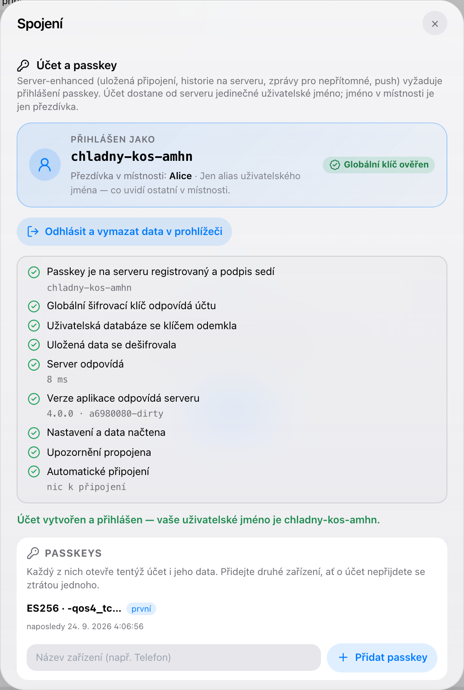
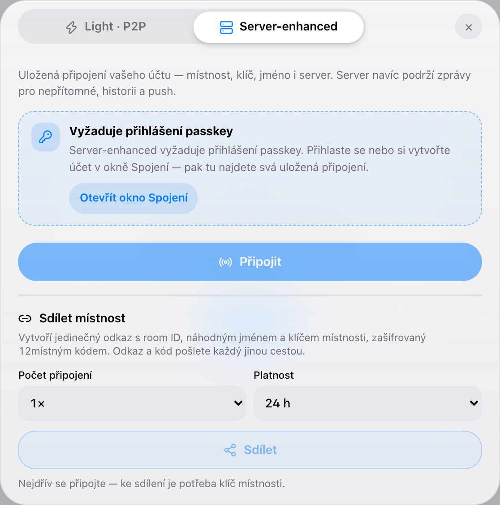
Úložiště#
Jedna globální SQLite databáze pro server a jedna SQLCipher databáze pro každého uživatele či anonymní relaci (aplikace od 4.0 anonymní relaci nezakládá — Server-enhanced je jen pro přihlášené). Podrobně v docs/storage.md.
$DATA_DIR/storage/
├── m5cet.db # globální: uživatelé, passkeys, index DB, logy, přenosy, audit, fronta
├── storage.key # master klíč, 0600 (nebo STORAGE_MASTER_KEY / STORAGE_KEY_FILE)
└── db/
├── db-<id>.db # účet — klíč z passkey (PRF), jen v paměti
└── db-<id>.db # relace — klíč zabalený master klíčem, TTL 24 h od posledního použití, max. 7 dníLimity
Kvóta 64 MB na účet, 16 MB na relaci (zápis nad kvótou se vrátí); zpráva ≤ 256 KB; hodnota kv ≤ 4 MB; 30 nových relací za hodinu z jedné adresy, 5 000 živých celkem; nejvýš 200 otevřených databází (LRU).
Povýšení relace na účet
Po vytvoření passkey se data relace zkopírují do databáze účtu v jedné transakci (ATTACH s klíčem), počty se ověří před commitem; relace se smaže až potom.
Klíče
Klíč účtu drží server po držitelích (zařízeních); zapomene ho a přepíše nulami, až se odhlásí poslední, nebo po 12 h nečinnosti. ID relací jen jako HMAC.
Veřejný status
/api/storage/status říká jen available, engine, caller, locked — nic o ostatních uživatelích. Úplný stav je v administraci.
Okno Místnost 3.3#
Otevře se klepnutím na logo vlevo nahoře. V záhlaví okna jsou místo názvu záložky typu připojení — Light · P2P a Server-enhanced (na úzkém displeji P2P / Server); vybraná záložka určuje režim. Pod obsahem záložky je část, která je vidět vždy: Připojit / Reconnect, Odpojit a Sdílet místnost.
| Záložka | Obsah |
|---|---|
| Light · P2P | jméno, room ID a klíč místnosti (klíč lze zobrazit okem) |
| Server-enhanced | uložená připojení ve stejném vzhledu jako v Moje připojení (barva, název, místnost · jméno · server, výchozí ★, režim) — bez tlačítek; připojení se vybere klepnutím a vybrané je orámované a zaškrtnuté. Poslední položka Jiná místnost ukáže pole pro ruční zadání. Nepřihlášený uživatel vidí od 4.0 jen výzvu k přihlášení s odkazem do okna Spojení a Připojit je neaktivní (Přihlášení a identita). |
- Ozubené kolo vpravo nad seznamem otevře Moje připojení nad oknem Místnost (tam jsou Připojit / Odpojit / Upravit / Statistiky / Výchozí / Sdílet / Smazat). Po zavření se seznam obnoví: smazané zmizí, nově vytvořené je rovnou vybrané. Bez uložených připojení nabídne okno tlačítko Vytvořit připojení, které otevře rovnou formulář.
- Tlačítko Připojit zní podle výběru (Připojit · Tým Brno); vybrané uložené připojení se připojí se svým klíčem, jménem, serverem a nastavením, Jiná místnost a Light · P2P s tím, co je v polích.
- Během spojení nic nepřepnete: druhá záložka, ostatní záznamy i pole jsou neaktivní, připojený záznam ukazuje Připojeno; tlačítko Reconnect obnoví totéž spojení (uložené připojení i na jeho vlastním serveru). Po Odpojit jsou záznamy znovu k výběru.
- Okno otevřené s uloženým připojením v použití (i po obnovení stránky) začne na záložce Server-enhanced.
- Okna nad sebou: Escape zavře jen to horní, každé další ztmaví obrazovku jen trochu. Všechna okna se vykreslují do
<body>, takže skleněné okno pod nimi (iOS 27) jejich pozici neovlivní. - Ovládání z klávesnice: šipky mezi záložkami (WAI-ARIA tabs), seznam je skupina přepínačů (
radiogroup).
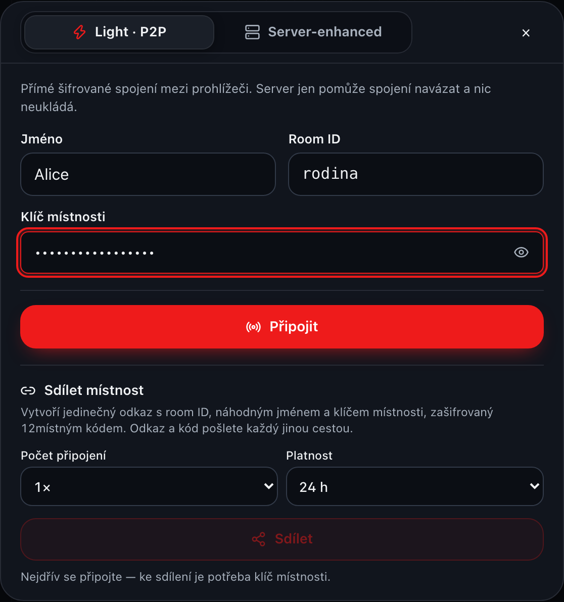
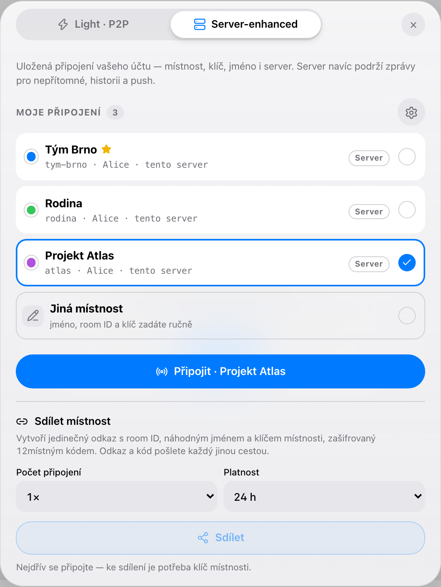
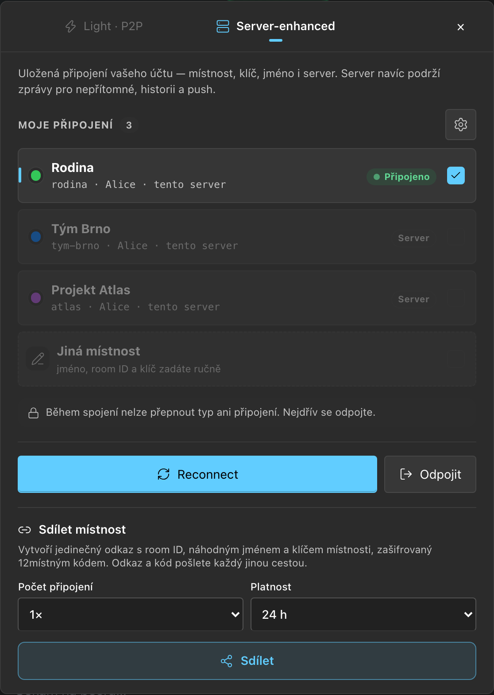
Uložená připojení 3.2#
Přihlášený uživatel v režimu Server-enhanced si uloží místnosti i s klíčem, jménem a nastavením, připojí se k nim jedním klepnutím (nebo z přepínače v záhlaví), vybere výchozí a nechá se k němu připojit hned po přihlášení. U každého připojení vidí statistiky a log. Menu › Moje připojení.
| Položka připojení | Význam |
|---|---|
| Název, barva | jak se připojení jmenuje v seznamu a v přepínači; barevná tečka |
| Místnost, klíč, jméno | vše, co chce formulář pro připojení; klíč lze zobrazit a vygenerovat (24 znaků z 57 bez záměn, ~140 bitů, bez modulo zkreslení) |
| Obslužný server | tento server, server ze seznamu správce, nebo vlastní wss:// adresa, pokud to správce dovolí (níže) |
| Režim, historie chatu | light / Server-enhanced a uchování chatu — nastaví se při připojení |
| Mizení zpráv | výchozí TTL zpráv odeslaných v této místnosti (nebo „nemizí“) |
| Relay pro nepřítomné | server drží zprávy, když uživatel není online — jen na tomto serveru |
| Upozornění | upozornění na nové zprávy v této místnosti |
| Automaticky znovu připojit | po výpadku se připojení obnoví samo (jde vypnout u jednoho připojení) |
| Udržování spojení | šetrná (ping 45 s, základ zpoždění obnovy 1,5 s), vyvážená (25 s, 1 s), rychlá (12 s, 0,5 s); zpoždění roste exponenciálně s náhodným rozptylem (full jitter), nejvýš 2 minuty |
Nastavení
- Výchozí připojení a po přihlášení se připojit k němu (když žádné není, k naposledy použitému) — jednou po každém načtení stránky, a jen když není připojené nic jiného (třeba místnost obnovená z relace).
- Po výpadku se připojit znovu (vypnuté i u jednotlivého připojení = po výpadku zůstane odpojené) a znovu připojit po návratu na stránku a do sítě (návrat skryté nebo zmrazené stránky, událost
online). - Přepínač v záhlaví vedle stavu spojení; volitelně dotaz před přepnutím z jiné místnosti.
- Statistiky a log vypnout (správce je může vypnout všem).
- Tlačítko Uložit aktuální místnost převezme místnost, klíč, jméno a nastavení, se kterými je uživatel právě připojený.
Statistiky a log
Počet připojení, čas online (celkem, nejdelší, průměr), zprávy a soubory odeslané / přijaté, objem souborů, obnovení spojení, neúspěšné pokusy, chyby, nejvíc lidí v místnosti a kdy naposledy. Log zapisuje vytvoření a úpravy, pokusy, připojení a odpojení, obnovy, chyby, příchody a odchody lidí a soubory; zprávy se jen počítají. Filtry Vše / Spojení / Lidé / Soubory / Chyby, export JSON (bez klíče místnosti) a vymazání. Délku logu určuje správce (výchozí 200 řádků na připojení).
Kde a jak se ukládají
Seznam, nastavení, statistiky i log tvoří jeden objekt, který prohlížeč zapečetí klíčem trezoru účtu (AES-GCM, klíč z PRF passkey, stejně jako profil) a uloží jako třetí část trezoru: PUT /api/account/vault s { connections: { ct, count } }. Server drží jen šifrovaný blok (nejvýš 1,5 MB), jeho velikost, čas a počet připojení — nikdy klíč, název místnosti ani to, kdo se kam připojil. Úprava se uloží hned; počítadla (zprávy, obnovy) se sbírají a odejdou nejdéle za 8 s, nebo když se stránka skryje či uživatel odhlásí. Dokud se trezor nenačte, klient nic nezapíše (starší zařízení tak nepřepíše novější data).
Sdílet připojení 3.3
V Moje připojení má každý záznam mezi hvězdičkou a košem tlačítko Sdílet. Otevře okno Sdílet připojení se stejnou pozvánkou jako okno Místnost — room ID a klíč zapečetěné 12místným kódem, omezený počet použití a platnost (1 h / 24 h / 7 d) — upravenou pro tuto situaci:
- Není potřeba být připojený — klíč je uložený v připojení.
- Karta připojení nahoře (barva, název, místnost, server) a volby jako řada tlačítek místo rozbalovacích seznamů.
- Jméno pro pozvaného (jinak náhodné, např.
bystry-sokol-42). - Používá-li připojení jiný signalizační server, pozvánka ho nese (zapečetěný s klíčem) a pozvaný se připojí tam — jen pokud ho správce tohoto serveru povoluje (Client & addons). Adresa, která není čisté
wss://, pozvánku zneplatní. - Výsledek: odkaz, kód, sdílení přes aplikace, QR, nový odkaz, zneplatnění, Hotovo.
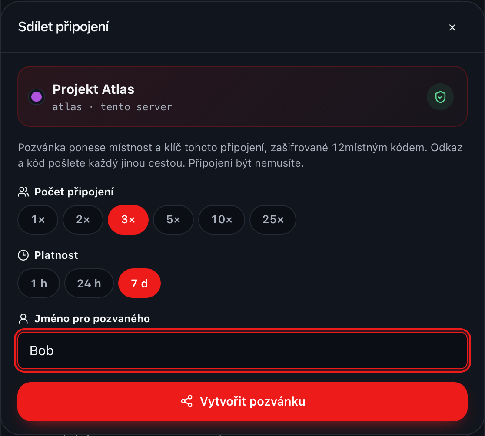
Jiný obslužný server
Připojení může místo tohoto serveru použít jiný signalizační server M5cet: ze seznamu, který správce vede v konzoli, nebo — když to dovolí — libovolnou adresu wss:// (ws:// jen pro localhost; bez přihlašovacích údajů, dotazu a fragmentu). Tamní provozovatel musí mít tuto doménu v ALLOWED_ORIGINS. Na cizí server klient neposílá token účtu, neotevírá úložiště přes WebSocket, nevyužívá relay pro nepřítomné a neposlouchá tamní administrátorské příkazy. Šifrování je stejné — klíč místnosti prohlížeč neopustí nikdy. Od 3.3 si relace pamatuje i server a uložené připojení, takže obnovení stránky vrátí spojení na tentýž server (dříve na tento).
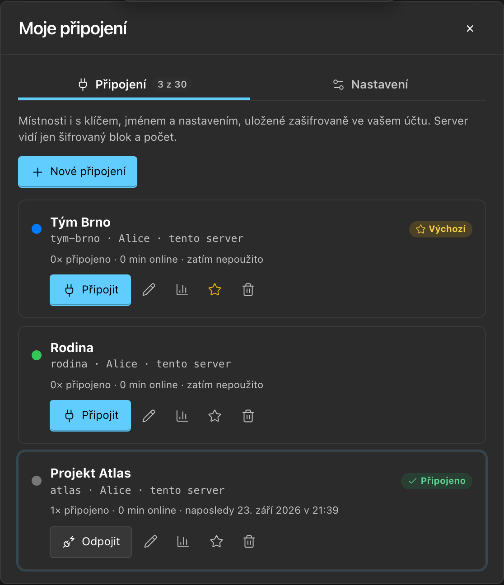
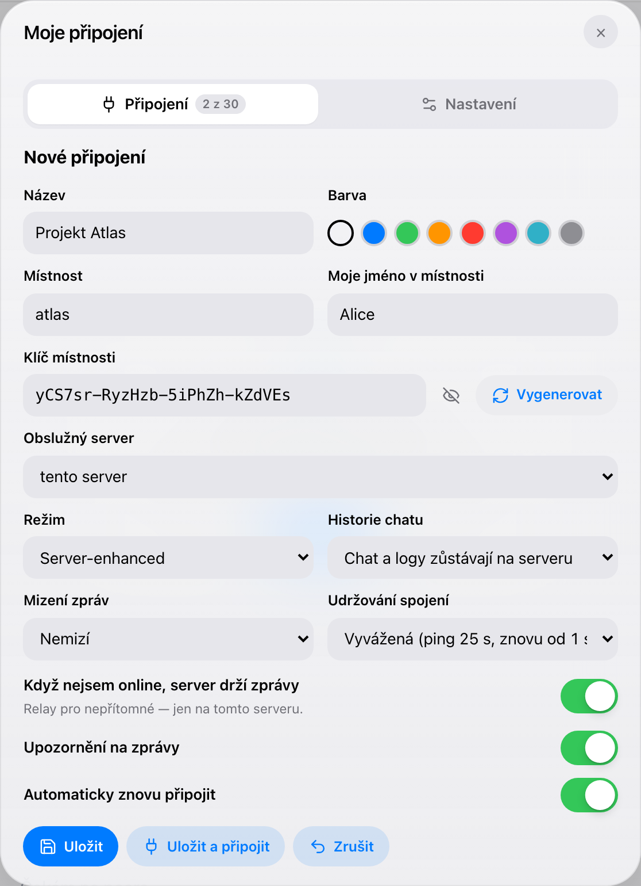
Šablony vzhledu 3.2#
Šablona mění celé GUI: barvy, písmo, tvary, stíny, průhlednost, ovládací prvky (přepínače, segmenty, záložky, výběry), bubliny zpráv, menu a styl ikon. K šabloně se dál kombinuje barevná variace (6) a rozvržení (4). Vzhled › Šablona.
| Rodina | Šablona | Tóny | Ikony |
|---|---|---|---|
| Systémové | iOS 27 | světlý + tmavý | badge |
| Windows 11 | světlý + tmavý | thin | |
| Klasické | Motorsport Dark | tmavý | outline |
| Glass Light | světlý | outline | |
| Terminal Secure | tmavý | outline | |
| Midnight | tmavý | outline | |
| Paper | světlý | outline | |
| Vysoký kontrast | tmavý | bold | |
| Studio | Aurora — polární záře, skleněné karty | tmavý | duotone |
| Nord — arktické pastely | tmavý + světlý | thin | |
| Sakura — růžová, měkké tvary | světlý | duotone | |
| Ocean — tyrkys a hlubina | světlý + tmavý | outline | |
| Graphite — grafit s oranžovou | tmavý + světlý | bold |
iOS 27
Systémové barvy iOS (modrá #007AFF, skupinové pozadí, oddělovače), písmo SF Pro (na Apple zařízeních systémové), Liquid Glass — průsvitné vrstvy s rozostřením a sytostí, světelný okraj a měkký stín — na záhlaví, menu, oknech a kompozéru. Bubliny jako iMessage (moje modré vpravo, cizí šedé), kompozér jako kapsle, zelené přepínače, segmentové přepínače s vystouplým vybraným segmentem, velké zaoblení, ikony menu na barevných čtverečcích jako v Nastavení; na telefonu okna jako spodní listy s úchytem.
Windows 11
Fluent: materiál Mica v okně, akrylové nabídky a vyskakovací okna, Segoe UI Variable, zaoblení 4–8 px, jemný rámeček s elevací (spodní hrana tmavší), akcent #005FB8 / #60CDFF, pole s akcentovou linkou při fokusu, vybraná položka menu s proužkem vlevo, přepínače, segmenty a záložky (pivot) s akcentovou linkou, tenké ikony 1,5 px.
Tón a ikony
- Tón u šablon se dvěma tóny: automaticky (podle nastavení systému, mění se za běhu), světlý, tmavý.
- Ikony: podle šablony, nebo
outline(2 px),thin(1,5 px),bold(2,5 px),duotone(tah a jemná výplň),badge(ikony menu na barevných čtverečcích). - Technicky: atributy
data-theme,data-tone,data-iconsadata-familyna<html>a CSS proměnné (client/src/themes.css, katalogclient/src/lib/theme-catalog.ts). Šablona se nastaví ještě před prvním vykreslením Reactu — stránka neblikne jinou barvou. - Které šablony uživatel smí vybrat, výchozí šablonu, tón a ikony a zámek určuje správce (Client & addons). Zařízení, které si šablonu nevybralo, ukazuje výchozí.
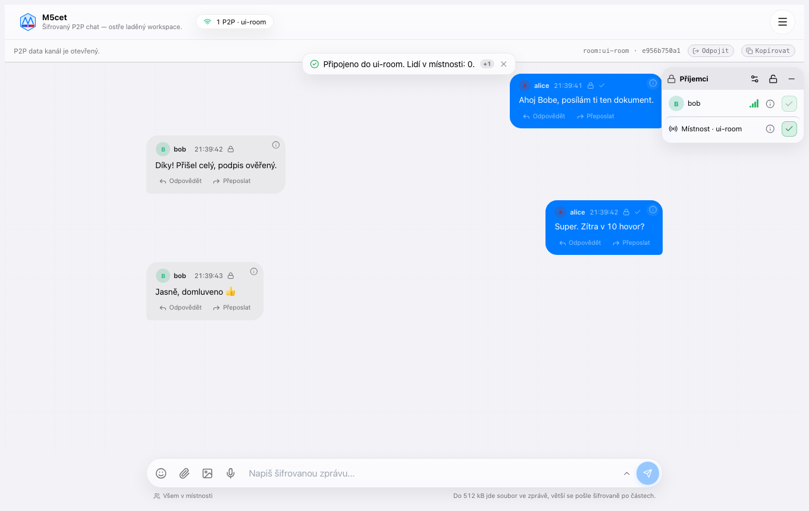
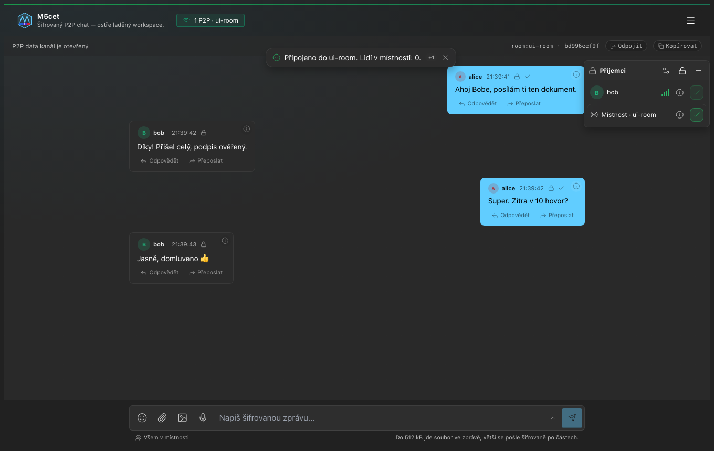
Administrace#
Konzole operátora na https://<doména>/console/. Živá data bere z hlavní služby (/api/admin/*), nástroje layoutu, telefonie a AI z admin služby (/admin/*). Přístup mají jmenovití administrátoři s rolí; ADMIN_API_TOKEN zůstává jako vlastník „admin“.
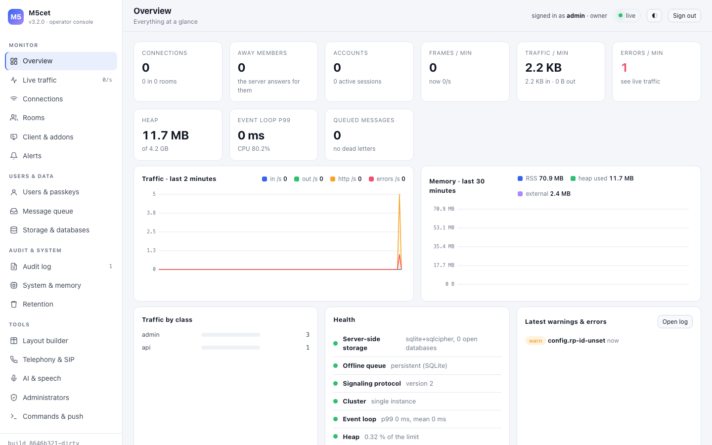
| Panel | Co ukazuje a co umí |
|---|---|
| Přehled | spojení, místnosti, nepřítomní, účty a relace, rámce a bajty za minutu, chyby, heap, event loop p99, fronta; grafy; zdravotní kontroly (úložiště, trvalost fronty, event loop, heap, audit komunikace) |
| Živý provoz | každý WebSocket rámec a HTTP požadavek (čas, kanál, směr, třída, typ, bajty, peer/účet, hash místnosti, spojení, stav, doba); filtry, pauza, detail; graf propustnosti |
| Spojení | otevřené sockety: jméno, peer, účet, místnost, klient (prohlížeč/OS), adresa /24 (/48), bajty a rámce, doba, protokol; odpojení |
| Místnosti | členové online i nepřítomní (hash místnosti, nikdy název) |
| Uživatelé a passkeys | účty, databáze (klíčování, otevřená), trezor, fronta, relace; detail s passkeys, položkami ve frontě, auditem účtu, žurnálem a provozem; odhlásit všude, smazat (s opsáním ID) |
| Fronta zpráv | stav fronty (uloženo / doručuje se / mrtvé / velikost / trvalost), schránky po účtech, dead-letter s obnovou |
| Úložiště | globální DB (soubor, WAL, stránky, žurnál, tabulky a řádky), index šifrovaných databází |
| Audit | žurnál s filtry (kategorie, úroveň, text), zdroj paměť / databáze, export CSV a JSON, přepínač auditu komunikace |
| Systém a paměť | RSS, heap (a limit), external, event loop p99 / průměr, CPU, zátěž hostitele, otevřené zdroje; grafy 30 minut |
| Retence | politika uchovávání, další běh, ruční spuštění |
| Příkazy a push | příkaz pro zařízení (doručí se hned, je-li připojené), čekající příkazy, log doručení, stav VAPID, odběratelé, testovací push |
| Client & addons 3.2 | využití uložených připojení; jejich politika a další signalizační servery; povolené šablony vzhledu, výchozí šablona, tón a ikony, zámek (níže) |
| Modules & groups 4.0 | moduly aplikace zapnuté pro všechny, jen pro některé skupiny, nebo vypnuté; vlastní skupiny uživatelů (níže) |
| Menu builder 4.0 | menu a navigace aplikace: pořadí přetažením, sekce, položky, HTML s proměnnými, oddělovače, speciální tlačítka, styly a stavy, náhled (Menu builder) |
| Layout builder 4.0.5 · 4.13 | GUI designer rozvržení celé aplikace (hlavní obrazovka, okno Místnost, okna, dialogy, panely): paleta prvků, strom s přetahováním, vlastnosti s našeptáváním, šablony, varianty pro skupiny a šablony vzhledu, historie s návratem, sloučení po aktualizaci, vložení HTML, kontrola přístupnosti, náhled samotné aplikace; texty a chování zpráv (Layout builder) |
| AI & speech 4.14 | poskytovatelé a klíče, modely a ceny, výchozí modely a pokyny asistenta, limity, zkušebna, test řeči, žurnál volání s živým proudem a CSV (AI a řeč) |
| Telefonie | přenesené nástroje z předchozí administrace |
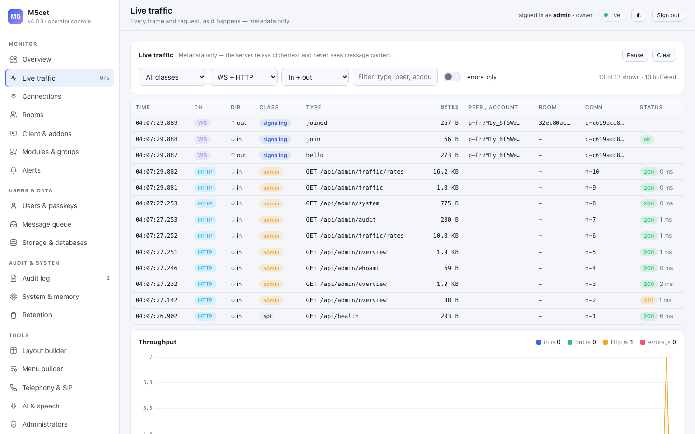
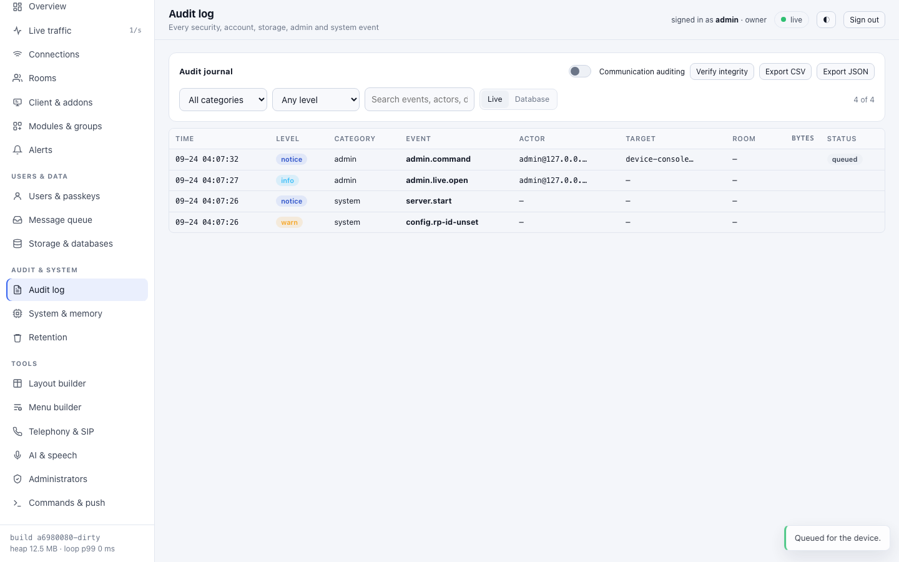
Role a přístupy 3.1
| Role | Smí |
|---|---|
| auditor | číst všechno (přehled, provoz, spojení, uživatele, frontu, úložiště, audit a jeho ověření, metriky, alerty); spravovat vlastní passkey. Tlačítka, která něco mění, má zašedlá — a server je odmítne (403). |
| operátor | navíc zasahovat: odpojit spojení, odhlásit nebo smazat účet, obnovit položku fronty, příkazy a testovací push, retence, zálohy a kontrola integrity, prahy alertů, kontrolní bod auditu |
| vlastník | navíc spravovat administrátory a jejich tokeny, VACUUM |
- Odkud se berou:
ADMIN_API_TOKEN(vlastník),ADMIN_TOKENS="alice:operator:token,bob:auditor:token"v prostředí, a administrátoři založení v konzoli (panel Administrátoři) s pojmenovanými tokeny — vadmin-users.jsonjen jejich hashe. - Přihlášení passkey: administrátor si v konzoli zaregistruje passkey (Můj passkey) a příště se přihlásí bez tokenu; relace konzole platí 8 h.
- Každý zásah se v auditu zapíše jménem administrátora (
actor), ne „admin“.
Client & addons 3.2
Co správce zapíná pro všechny klienty. Uloží se do $DATA_DIR/client-config.json (nebo CLIENT_CONFIG_FILE; sdílí ho všechny instance), klienti si ho berou z GET /api/client-config při startu a pak každých 5 minut. Číst smí auditor, měnit operátor; každá změna je v auditu jako admin.client-config.
| Nastavení | Výchozí | Význam |
|---|---|---|
| Users may save connections | ano | uložená připojení pro přihlášené v režimu Server-enhanced |
| Statistics and logs | ano | klienti vedou statistiky a log připojení |
| New users: connect the default after sign-in | ano | výchozí hodnota uživatelského nastavení |
| Users may type other signaling servers | ne | jinak jen tento server a servery ze seznamu |
| Connections per account, Log lines per connection | 30, 200 | limity (max. 200 a 2 000) |
| Other signaling servers | — | až 20 serverů (název, wss:// adresa), které připojení smí použít |
| GUI templates | všechny | šablony, které si uživatelé smějí vybrat |
| Default template / tone / icons | Motorsport, automaticky, podle šablony | co ukazuje zařízení, které si nevybralo |
| Lock | ne | všichni dostanou výchozí šablonu, výběr je zamčený |
Horní karta ukazuje využití: počet účtů, kolik z nich má uložená připojení a kolik připojení celkem — z počtů, které hlásí prohlížeč; obsah trezoru server nepřečte.
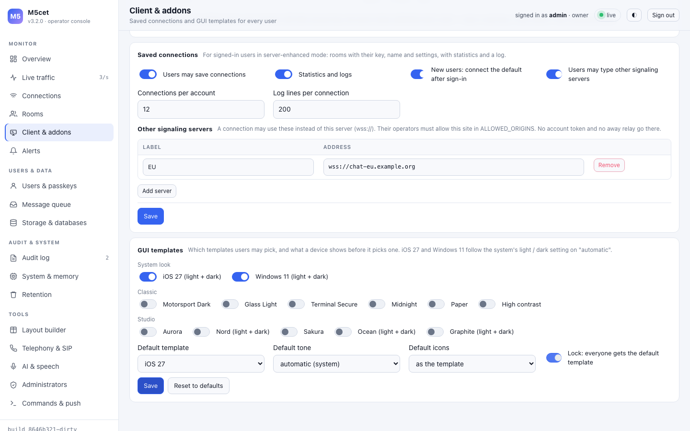
Moduly a skupiny 4.0
Konzole › Modules & groups. Každý modul aplikace — audio, video, files, location, speech, ai, telephony, nfc, invites, connections, notifications, analytics, appearance, editMode — je buď zapnutý pro všechny, zapnutý jen pro vybrané skupiny, nebo vypnutý. Skupiny: guest (nepřihlášení), user (přihlášení passkey) a vlastní skupiny správce, jejichž členy jsou uživatelská jména.
- Aplikace modul, který uživatel nesmí, schová: položky menu (i v Menu builderu), panely, tlačítka ve psaní zprávy (soubory, obrázky, hlasové zprávy), sdílení, Edit Mode. Otevřený panel vypnutého modulu se zavře.
- Server to, co modul obsluhuje, odmítne (
403 module-disabled):/api/ai/complete,/api/speech/tts|stt,/api/telephony/sms|call,/api/share/create,/api/push/subscribe|test,/api/account/push. Skupiny volajícího určí z jeho relace. - Ukládá se do konfigurace klienta (
modules,groups); členové skupin se klientům nikdy neposílají — účet se dozví jen své skupiny (/api/account/me›groups). Sloupec On the server ukazuje, zda je serverová část modulu nakonfigurovaná.
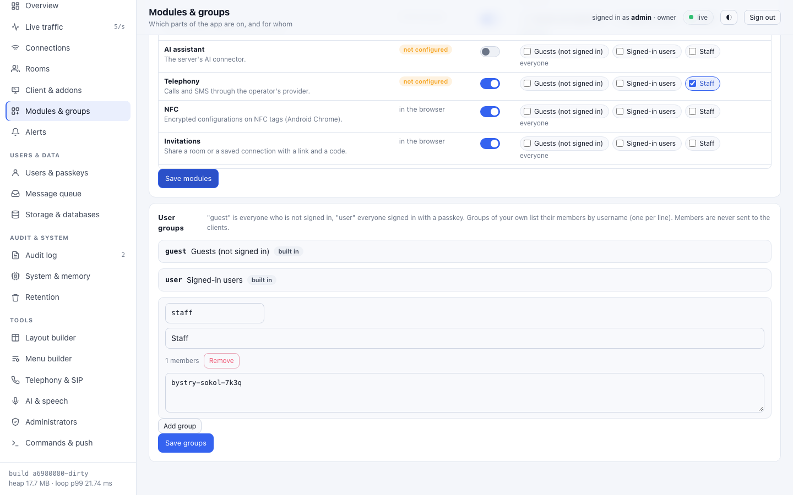
Bezpečnost konzole
- Token je jen v paměti záložky (volitelně v
sessionStorage), nikdy vlocalStorage— starý klíčm5cet:admin:cfgkonzole při načtení smaže. - CSP
script-src 'self', žádné inline skripty anieval,frame-ancestors 'none'. Vše ze serveru jde do stránky přestextContent. - Živý stream je Server-Sent Events čtený přes
fetch()— token v hlavičce, ne v URL (nezůstane v logu proxy). - Odmítnuté tokeny se počítají: 30 za 15 minut na adresu. Každý zásah operátora se zapíše do auditu (kategorie
admin). - Doporučeno omezit
/console/,/admin/a/api/admin/v nginx na adresy správců (allow … ; deny all;).
Layout builder — GUI designer 4.0.5 · 4.13#
Konzole › Layout builder. Části aplikace jsou od 4.0.5 stromy prvků — data, která kreslí LayoutView.tsx. Výchozí stromy vykreslují přesně totéž, co dřív kód komponent: při převodu se porovnal DOM starých a nových komponent v 248 situacích (typy zpráv, přílohy, zapečetění, mizení, stavy doručení, widget se všemi stavy lidí, lišta, okno chatu, psaní) a výsledek hlídají snímky v testech. Správce tak mění design i strukturu bez zásahu do kódu; nezměněná rozvržení dál sledují aktualizace aplikace. Od 4.13 jsou rozvržením i okno Místnost, okna, dialogy a panely — 45 rozvržení v pěti sekcích (níže); ve 4.14 přibyl asistent AI.
| Rozvržení | Co kreslí | Živé části |
|---|---|---|
| App bar | logo (otevře okno Místnost), stav spojení, přepínač uložených připojení, celá obrazovka | odznak účtu, menu (Menu builder) |
| Chat window | informační pruh (oznámení, místnost, Odpojit, Kopírovat), konverzace, prázdný stav, „zobrazit starší“ | karta přenosu souboru, zpráva, pole pro psaní |
| Incoming / Outgoing / System message | bublina: hlavička, čas a ikony, citace, přeposlání, soukromé, tělo s odkazy, přílohy, zapečetění, podržení, mizení, akce, stav doručení | odznak odesílatele (příchozí) |
| Composer | citovaná zpráva, emoji, přílohy, pole, patička s příjemci | hlasová zpráva, odeslání s volbami |
| Recipients widget / button | hlavička, nastavení, lidé s latencí a volbou, místnost, vše / nic; minimalizované tlačítko | — |
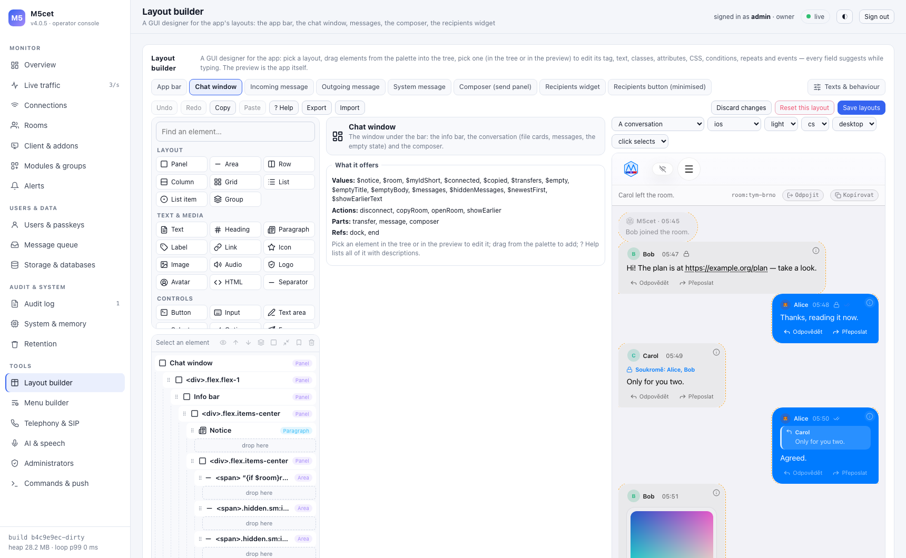
Paleta a nastavení prvků
- Rozložení: Panel (
div,section,header,nav…), Area (span,strong,small…), Row, Column, Grid, List a List item, Group (bez vlastního prvku). Text a média: Text (šablona; formát links), Heading, Paragraph, Label, Link, Icon (207 ikon), Image, Audio, Logo, Avatar, HTML (bezpečné), Separator. Ovládání: Button, Input (text, password, number, email, range, color, file…), Text area, Select + Option, Form. Logika: App part (živá část aplikace), Template (šablona prvků). Kontejnery se libovolně vnořují. - Každé pole našeptává během psaní (šipky, Enter / Tab): tag, třídy, které styly aplikace opravdu mají (čtou se z buildu), názvy atributů podle tagu a jejich hodnoty (
typeinputu,role,target,autocomplete…), 114 vlastností CSS s hodnotami (display: block, flex, grid, contents…), proměnné rozvržení ({$room},$peers), akce a živé části. - Hodnota atributu je šablona, nebo výraz po
=se zachovaným typem:=$openPeerCount == 0,=$private ? '1' : null(nullatribut vynechá). Výrazy umí&& || ! == != < >, podmínku? :a filtry. - Logika: zobrazit jen když, opakovat pro každou položku seznamu (
$peersjako$p, klíč,$iterator), CSS z dat, ref a události → akce s argumentem (click→togglePeer,$p.id). - Styl a stavy — týž editor jako v Menu builderu, včetně hover, click, focus a current.
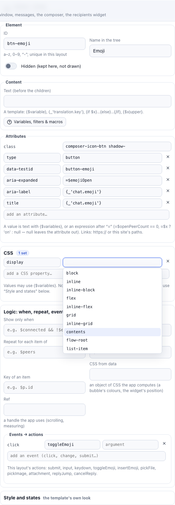
display, událost → akce.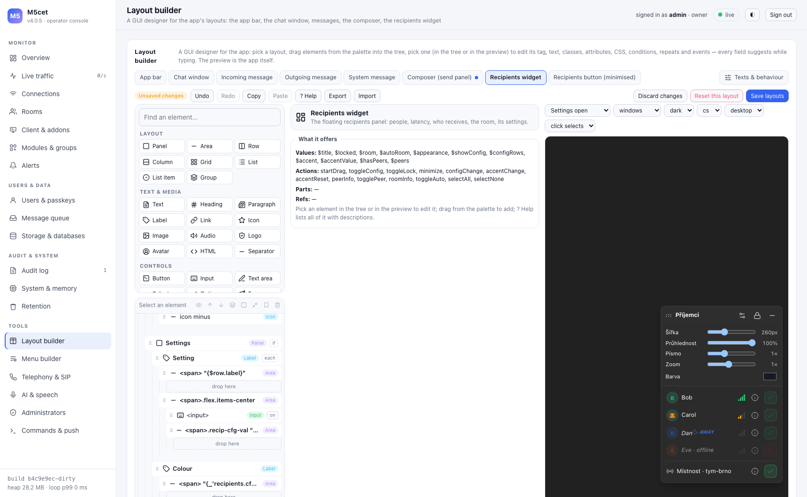
Strom, šablony, náhled
- Přetažení z palety do stromu (dovnitř, před, za), přesouvání, Alt+↑/↓, duplikace, zabalení do panelu a rozbalení, skrytí, smazání, kopírovat / vložit i mezi rozvrženími, zpět / znovu, export / import.
- Šablony: Save as template uloží vybraný prvek; z palety se vloží propojeně (změna šablony se projeví všude, kde je) nebo jako kopie; šablona dostane argument jako
$arga upravuje se ve vlastní záložce. - Náhled je aplikace sama (
layout-preview.html): skutečné komponenty, CSS a šablony vzhledu s ukázkovými lidmi a zprávami; situace podle rozvržení, šablona, tón, jazyk, šířka (desktop / tablet / telefon). Klepnutí vybere prvek, v režimu click tries it náhled reaguje (emoji, příjemci, psaní). Chyby ve výrazech se ukáží u prvku. - Rozvržení, které se od výchozího neliší, se neukládá; u uloženého builder upozorní, když aktualizace aplikace změnila výchozí stav, ze kterého vzniklo.
- Záložka Texts & behaviour: krátké texty (
{{placeholders}}, includes), co zprávy ukazují, sbalování systémových zpráv a rychlé barvy komponent (dřívější nastavení).
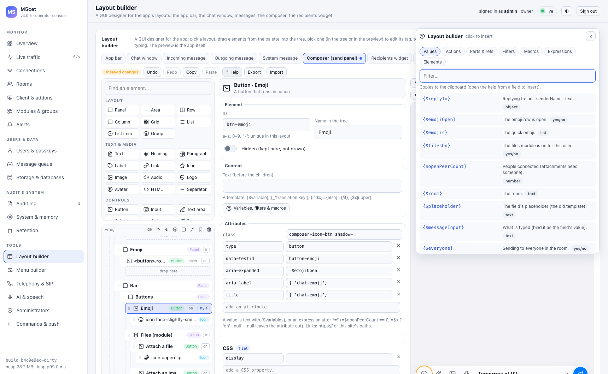
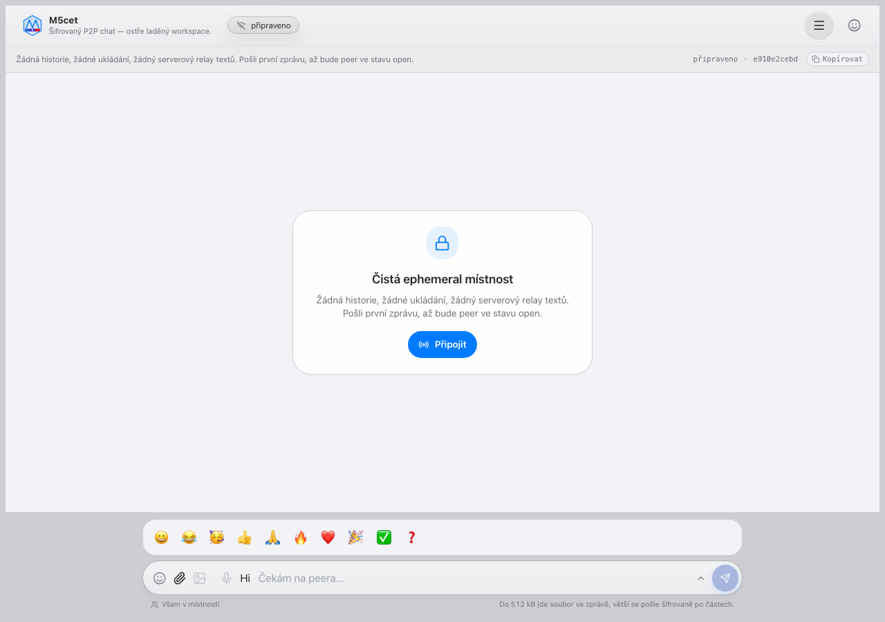
Celá aplikace v sekcích 4.13
Záložky rozvržení jsou rozdělené do sekcí; číslo u sekce říká, kolik rozvržení obsahuje, tečka, že některé z nich je vaše, a podtržení, ve které sekci je právě upravované.
| Sekce | Rozvržení |
|---|---|
| App (8) | lišta, okno chatu, zprávy (3), psaní, widget příjemců a jeho tlačítko — viz tabulka výše |
| Room window (2) | záložky Light · P2P / Server-enhanced v záhlaví; obsah okna (jméno, místnost, klíč, uložená připojení, Připojit / Odpojit, sdílení) |
| Windows (2) | okno panelu (záhlaví, zavření, vrstvení nad jiným oknem) a velké okno nastavení (uprostřed / šuplík vpravo) |
| Dialogs & parts (9) | „nejdřív se přihlaste“, odznak přihlášeného, informace o účastníkovi (bezpečnostní číslo, QR), informace o zprávě (audit, šifra), kontrola verzí, sdílení místnosti a připojení, vytvořená pozvánka, zadání kódu pozvánky |
| Panels (24) | asistent AI (4.14), účet, passkey (okno Připojení), historie chatu, profil, nastavení, soukromí, šifrování, oznámení, analytika, zabezpečení místnosti, důvěra (otisky), lidé v místnosti, hlasový a video hovor, soubory, poloha, řeč, podrobnosti spojení, telefonie, Moje připojení (seznam, úprava, statistiky a log, nastavení) |
- Každé rozvržení má kontrakt (co mu komponenta dává: hodnoty, akce, živé části) a situace náhledu — náhled kreslí skutečnou komponentu s ukázkovými daty, v okně, ve kterém ji ukazuje aplikace. Stav, kam se komponenta dostane jen používáním (otevřený log připojení, vytvořený obnovovací kód, QR pozvánky), si náhled „doklikne“ sám; klepnutí náhledu se nepočítá jako výběr prvku.
- Převod je věrný: DOM i volané akce starých a nových komponent se porovnaly krok za krokem v desítkách situací (česky a anglicky, u části i německy). Jediný záměrný rozdíl: šest polí dostalo přístupný název (kontrola přístupnosti je našla — klíč v úpravě připojení, text SMS, odkaz pozvánky, výběr serverového hlasu, název passkey a obnovovací kód).
- Aplikace kreslí rozvržení operátora pro přihlášeného diváka (
LayoutProvider): varianta podle jeho skupin a šablony vzhledu, jinak rozvržení operátora, jinak výchozí. Výchozí stromy se sestaví až při prvním použití (úvodní obrazovka potřebuje 8 ze 45).
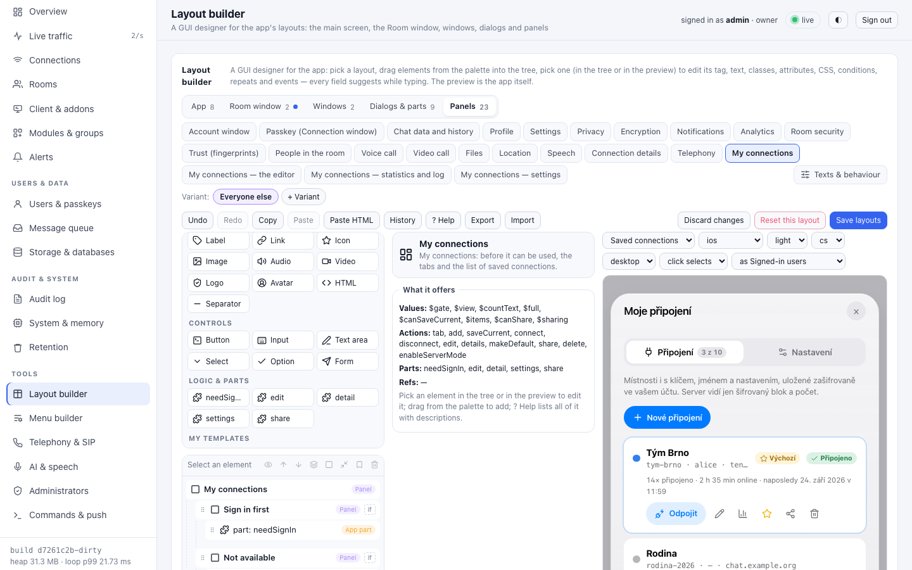
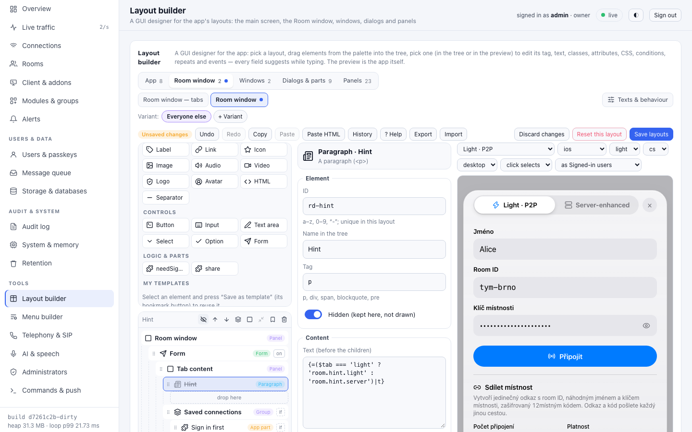
Varianty pro skupiny a šablony 4.13
- Pod záložkami je řádek variant: Everyone else (rozvržení pro ostatní) a + Variant. Varianta má název, skupiny (vestavěné i vlastní z Modules & groups) a šablony vzhledu; platí, když divák patří do některé ze skupin a (jsou-li zadané) má jednu ze šablon. Bez podmínky se varianta nekreslí.
- Rozhoduje první vyhovující varianta (pořadí mění tlačítka Earlier / Later). Nejvýš 8 variant na rozvržení a 40 celkem.
- Náhled ukazuje upravovanou variantu; v náhledu lze přepnout, jako kdo se díváte (skupiny), a vidět, co dostane kdo jiný.
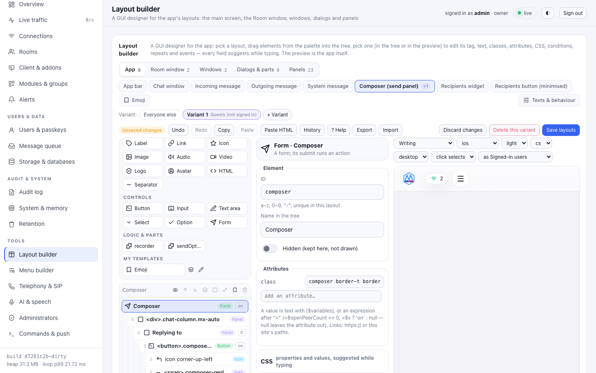
Historie, rozdíly a návrat 4.13
- Každé uložení (i reset a návrat) je verze: kdo, kdy, co změnil (rozvržení, varianty, šablony, texty). Drží se posledních 50 verzí (nejvýš ~12 MB) v
layout-history.jsonvedlelayout.json; první uložení zapíše i stav před ním. - U verze jsou rozdíly — co tahle změna přinesla, nebo co by návrat změnil proti dnešku: přidané, odebrané, přesunuté a změněné prvky jménem (s počtem prvků uvnitř), změněná pole.
- Restore this version vrátí celou konfiguraci; návrat je sám verzí, takže jde vrátit také.
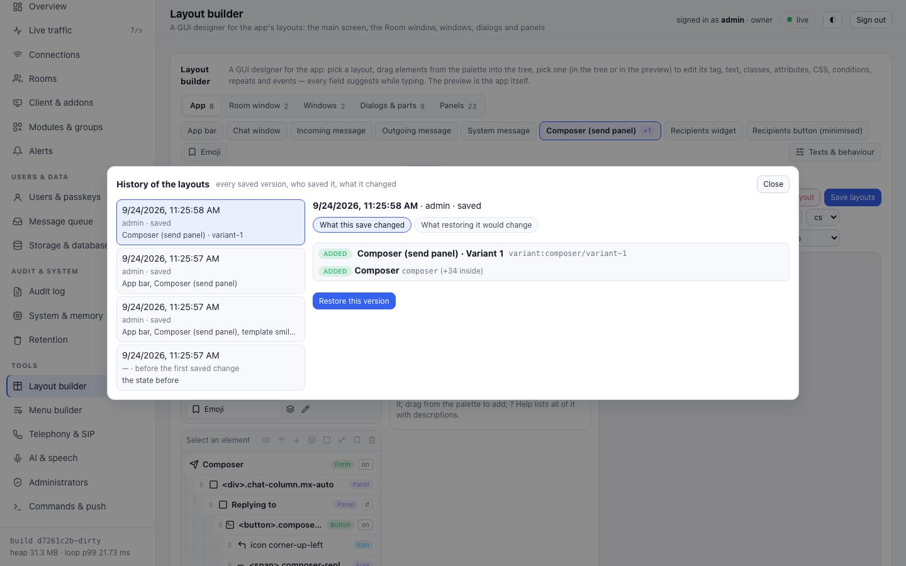
Aktualizace aplikace a sloučení 4.13
- Každé vlastní rozvržení (i varianta) si pamatuje revizi výchozího stromu, ze kterého vzniklo. Všechny vydané výchozí stromy jsou v
server/layout-archive.json, takže po aktualizaci server najde výchozí stav, ze kterého operátor vycházel, a sloučí třícestně: změny operátora + změny aplikace nad společným základem (podle id prvků — pole, atributy po jednom, přesuny, přidání, odebrání). - Nekonfliktní sloučení proběhne samo při načtení a konzole ho oznámí; soubor se přepíše až při uložení. Při konfliktu (obě strany změnily totéž) zůstává operátorovo a builder nabídne Merge with the new default se seznamem konfliktů — u každého Use the app's, jinak platí vaše.
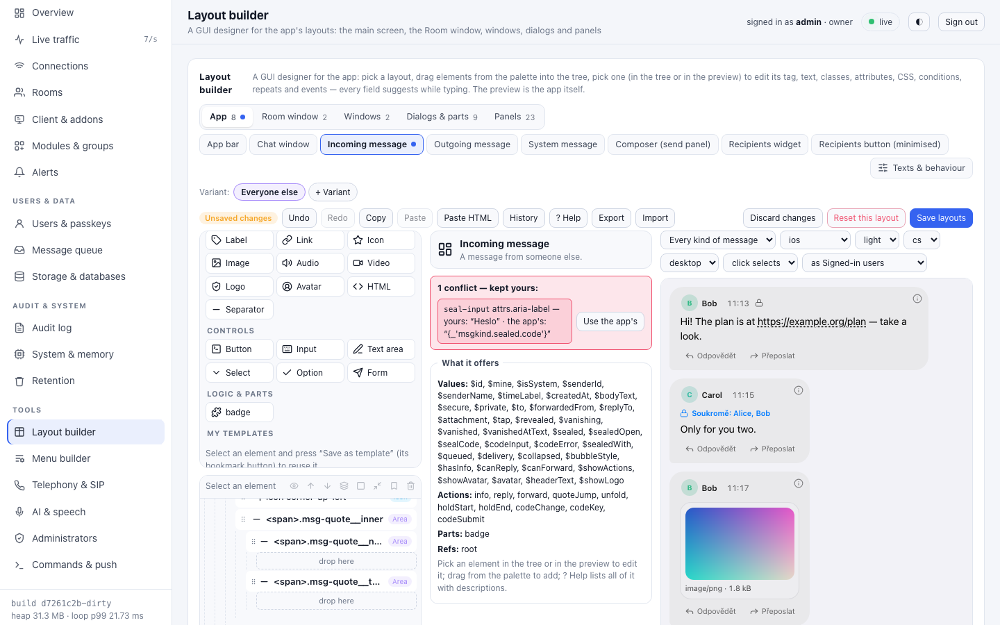
Vložení HTML 4.13
Paste HTML převede kus HTML na prvky palety a vloží je do vybraného kontejneru: tagy na panely, oblasti, nadpisy, odkazy, seznamy, obrázky, video, tabulky, formuláře a pole, SVG ikonu lucide z katalogu na ikonu; třídy a bezpečné atributy zůstanou, <script>, on* atributy, style, nebezpečné adresy a neznámé tagy se vynechají a builder vypíše, co a proč (nejvýš 200 000 znaků).
Kontrola přístupnosti 4.13
- Pod náhledem je souhrn Accessibility a čipy u prvků ve stromu. Návrh: obrázek bez
alt, tlačítko nebo odkaz bez názvu, pole bez popisku (placeholder popisek není), klikací prvek bez klávesnice, kladnýtabindex, přeskočené úrovně nadpisů, duplicitníid,target="_blank"bezrel="noopener"/noreferrer. - Vykreslený náhled: skutečný přístupný název ovládacích prvků, popisky polí a kontrast každého textu proti tomu, co je za ním opravdu vidět (průhledné vrstvy se skládají), podle WCAG 4.5:1 (velký text 3:1) — pro zvolenou situaci, šablonu a tón.
- Výchozí rozvržení aplikace kontrolou procházejí (hlídá to test); jedno upozornění zůstává: nápověda psaní v šabloně iOS má kontrast 4.47:1.
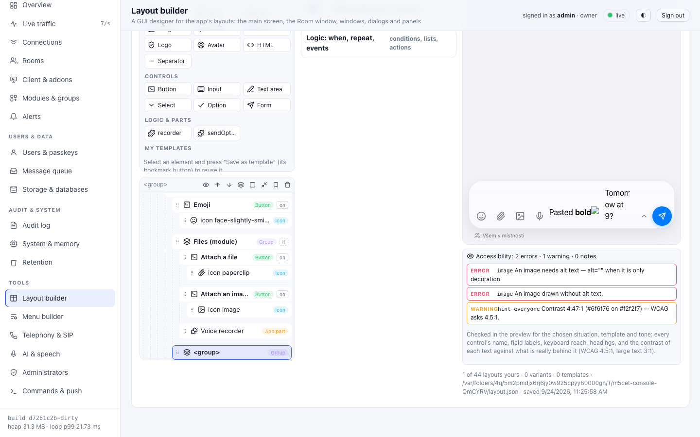
Výkon
Šablony ({$x|filtr}, podmínky, výrazy) se překládají na funkce jednou a pak se jen volají; strom rozvržení se také přeloží jednou (pro každý uzel připravené čtení dat, atributy, podmínky a opakování), neměnné části se vytvoří jednou a React je při dalším vykreslení přeskočí. Nová syntaxe: filtry nad výrazem v závorce, např. {=('acc.signedInAs'|t|replace:'{name}':$userName)}.
Bezpečnost: server i aplikace validují strom týmž modulem (layout-tree.ts) — jen známé prvky a tagy, žádné on* atributy, style, srcdoc ani formaction, adresy jen https:, cesty webu, #, mailto:, tel: a data:image (při vykreslení i data:/blob: z dat aplikace, nikdy javascript:), CSS bez url() a výrazů, limity velikosti. Vykreslení nikdy nepoužívá innerHTML; prvek HTML jde přes bezpečný parser. Konzole a náhled si píší jen se stejným původem.
AI a řeč 4.14#
Konzole › AI & speech. Server volá AI poskytovatele za uživatele aplikace (asistent), za konzoli (zkušebna, testy) a později za funkce (framework funkcí). Každé volání prochází jednou službou (server/ai/service.ts): vybere poskytovatele a model, ověří přepínač modulu, kdo ho smí použít a limity, zavolá adaptér (i s průběžným psaním odpovědi), spočítá tokeny a cenu a zapíše volání do žurnálu. Chat zůstává E2E šifrovaný: do AI jde jen to, co uživatel asistentovi sám napíše, a okno asistenta to říká.
| Poskytovatel | Protokol | Klíč | Poznámka |
|---|---|---|---|
| Anthropic (Claude) | Messages API | ano | streamování, adaptivní uvažování s úsilím (effort) u generace Claude 5, rozpočet uvažování u starších modelů; seznam modelů i s tím, co umí |
| OpenAI | Chat Completions | ano | chat, řeč (tts-1…) a přepis (whisper-1…); max_completion_tokens, reasoning_effort |
| Open WebUI | OpenAI-kompatibilní (…/api) | ano | modely a znalosti instance Open WebUI |
| Perplexity | OpenAI-kompatibilní | ano | odpovědi se zdroji (citace se ukážou u odpovědi); modely sonar… se zadávají jménem |
| Ollama | vlastní API (/api/chat, NDJSON) | ne | lokální modely, přemýšlející modely (think) |
| llama.cpp server, GPT4All, jiný kompatibilní (vLLM, LM Studio, LocalAI…) | OpenAI-kompatibilní | volitelně | lokální servery |
| Hugging Face | Inference Providers (router.huggingface.co) | ano | chat; přepis přes hf-inference; model může nést poskytovatele nebo politiku (…:fastest) |
| ElevenLabs | vlastní API | ano | řeč; hlasy účtu se načtou s modely |
Poskytovatelé a klíče
- Add a provider (vlastník): druh, jméno, adresa (prázdná = obvyklá), klíč, první model a kdo ho smí v aplikaci používat (skupiny: přihlášení uživatelé, hosté, vlastní skupiny z Modules & groups).
- Klíč se zašifruje (AES-GCM) klíčem odvozeným z master klíče úložiště serveru (
STORAGE_MASTER_KEY/storage.key) a je svázaný s poskytovatelem — soubor$DATA_DIR/ai/config.jsonsám klíč neprozradí a zašifrovaný klíč nejde přenést k jinému poskytovateli. Konzole klíč už nikdy neukáže (jen poslední 4 znaky); nový ho nahradí. - Test zjistí, zda poskytovatel odpovídá (seznam modelů, nebo krátký dotaz) a výsledek zůstane u poskytovatele.
- Klíč z proměnné prostředí (
ANTHROPIC_API_KEY,OPENAI_API_KEY,HF_API_KEY,ELEVENLABS_API_KEY,OLLAMA_URL— jako před 4.14) se ukáže jako poskytovatel „z prostředí“: klíč a adresa zůstávají v prostředí, modely a skupiny se nastavují v konzoli.
Modely
- Fetch models načte modely od poskytovatele (u Anthropicu i s tím, jak model uvažuje a kolik má kontextu); nové jsou vypnuté, dokud je operátor nezapne. Model jde přidat i jménem (Perplexity, jméno, které poskytovatel neuvádí).
- U modelu: zapnuto, jméno pro aplikaci, druh (chat, řeč, přepis), uvažování (žádné / rozpočet / adaptivní s úsilím), obrázky na vstupu a ceny v USD za milion tokenů (u řeči za milion znaků) — ceny zadává vlastník, protože se z nich počítá rozpočet.
- Parametr, který model odmítne (
temperatureu Claude 5,max_tokensu novějších modelů OpenAI, typ uvažování…), adaptér vynechá a zkusí znovu — a zkušebna ukáže, co přesně odešlo.
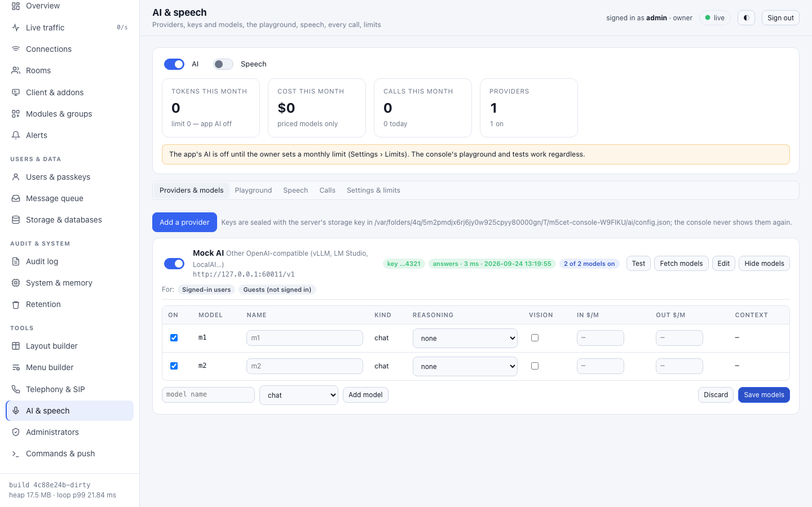
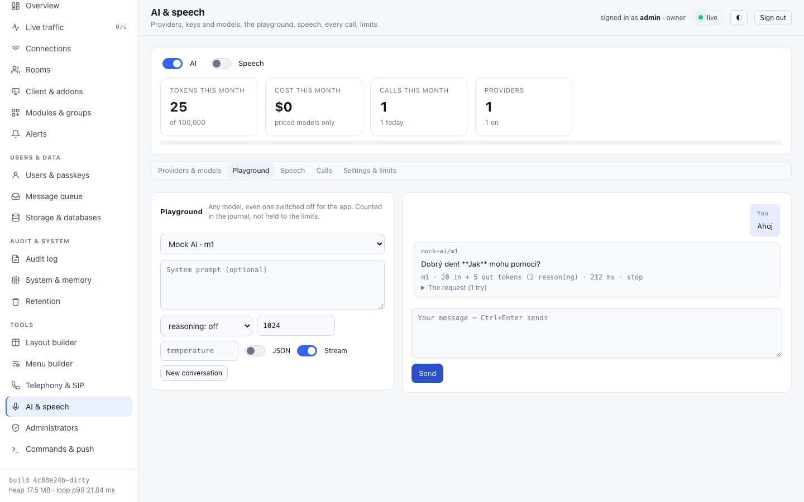
Limity a náklady
- Tokeny za měsíc pro celý server: ve výchozím stavu 0 = asistent v aplikaci je vypnutý, dokud vlastník nenastaví limit (prázdné = bez limitu). Volitelně USD za měsíc (počítá se u modelů s cenou).
- Na uživatele a den: počet volání a tokeny (výchozí 200 volání). Nejdelší odpověď (výchozí 2 048 tokenů) a nejdelší odeslaná konverzace (24 000 znaků).
- Konzole (zkušebna, testy) se do limitů počítá, ale limity ji neblokují.
- Nahoře na stránce: tokeny, náklady a volání tohoto měsíce a dnes, s ukazatelem vůči limitu.
Žurnál volání
- Každé volání (aplikace, zkušebna, testy): kdy, odkud, kdo (uživatelské jméno / host / administrátor), poskytovatel a model, výsledek (ok, chyba se stavem a zprávou poskytovatele, odmítnuto limitem, zrušeno), doba i doba do prvního kousku odpovědi, tokeny (vstup, výstup, uvažování, z cache; odhad, když je poskytovatel neuvedl) a cena. V
$DATA_DIR/ai/journal.db(SQLite, zapisuje aplikace i admin služba); bez ovladače SQLite v paměti. - Co bylo řečeno se neukládá — jen když vlastník zapne content logging na omezenou dobu (1–168 hodin, k ladění); pak obsah vidí jen vlastník a po skončení se smaže.
- Filtry, živý proud, detail volání, export CSV (buňky, které by tabulkový procesor spustil jako vzorec, dostanou apostrof), souhrny po dnech, modelech, uživatelích a zdrojích; mazání (vlastník). Uchovává se 30 dní (nastavitelné).
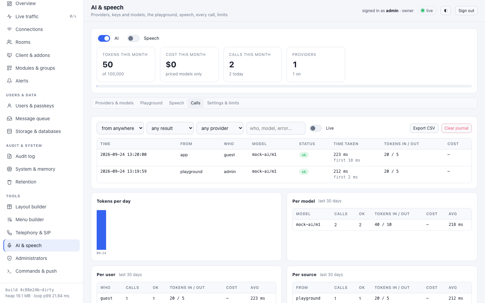
Zkušebna a řeč
Zkušebna je konverzace s jakýmkoli modelem (i vypnutým pro aplikaci): systémový pokyn, úroveň uvažování, nejdelší odpověď, teplota, JSON, průběžné psaní; u odpovědi uvažování, zdroje, tokeny, cena, čas a požadavek — adresa, tělo (bez klíče), stav a počet pokusů. Karta Speech vyzkouší syntézu (model, hlas, text → přehrávač) a přepis (nahrávka z mikrofonu nebo soubor).
Asistent v aplikaci
- Menu › AI asistent: výběr modelu (ty, které uživatel smí), úroveň uvažování (u modelů, které uvažují), konverzace. Odpověď se píše průběžně, jako Markdown (nadpisy, seznamy, kód, tabulky, odkazy jen https / mailto — nic z odpovědi se nestane HTML), s uvažováním a zdroji; Zastavit ponechá, co přišlo; poslední odpověď jde vložit do zprávy nebo zkopírovat. Enter odesílá, Shift+Enter dělá nový řádek.
- Když asistent použít nejde, okno řekne proč: vypnuto, žádný model, jen pro přihlášené (s tlačítkem do okna Připojení), vlastník ještě nenastavil limit. Odmítnutí (limit, délka) je v jazyce uživatele.
- Okno je rozvržení
panel.aiv Layout builderu (sekce Panels); vlastní pokyny asistenta nastaví operátor v konzoli (Settings › Defaults).
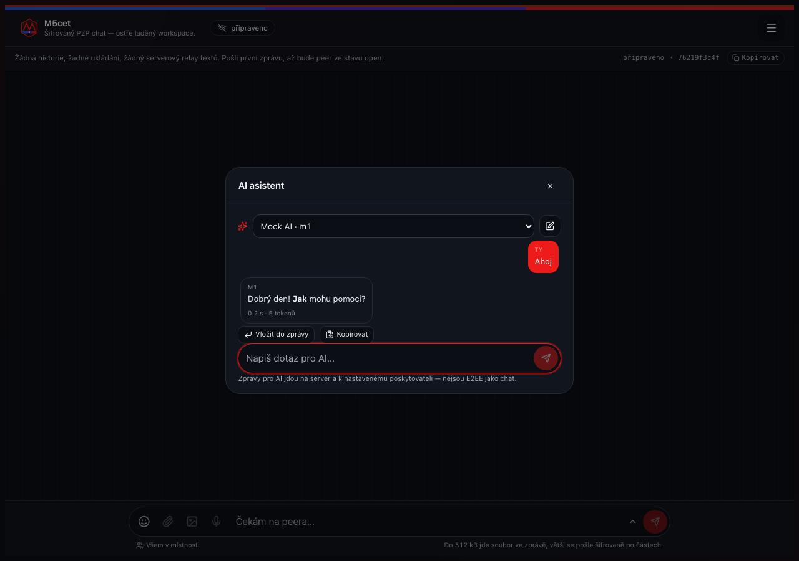
API
Aplikace: GET /api/ai/status (stav a modely pro přihlášený účet nebo hosta), POST /api/ai/chat ({ model?, messages, system?, reasoning?, stream? }; se stream: true Server-Sent Events delta, reasoning, citations, done, error; nginx proud nebufferuje — X-Accel-Buffering: no, ping každých 15 s), POST /api/ai/complete (dřívější volání), GET /api/speech/status, POST /api/speech/tts, POST /api/speech/stt. Konzole: GET /admin/ai, PUT /admin/ai/switches, POST|PUT|DELETE /admin/ai/providers[/:id], POST …/:id/test, POST …/:id/discover, PUT …/:id/models, PUT /admin/ai/defaults, PUT /admin/ai/limits, PUT /admin/ai/journal, POST /admin/ai/playground, POST /admin/ai/speech/tts|stt, GET /admin/ai/calls[/:id], GET /admin/ai/calls.csv, GET /admin/ai/summary, GET /admin/ai/stream, DELETE /admin/ai/calls. Čtení: auditor; změny: operátor; klíče, adresy, ceny, limity, obsah žurnálu a mazání: vlastník.
Přechod ze 4.13
- Po aktualizaci je asistent v aplikaci vypnutý, dokud vlastník nenastaví měsíční limit (Settings & limits › Limits).
- Klíče z prostředí se ukážou jako poskytovatelé „z prostředí“ s modely z proměnných (
OPENAI_MODEL…); dají se nahradit poskytovatelem v konzoli a proměnnou pak odebrat. - Hosté (nepřihlášení) asistenta používají, jen když má poskytovatel skupinu Guests (dřív stačilo zapnout modul).
Další etapy: framework funkcí
4.14 je první etapa návrhu docs/functions-architecture.md: funkce v JavaScriptu a Pythonu (QuickJS a Pyodide v izolaci WebAssembly) spouštěné přes frontu, balíčky a modely, spouštění z chatu příkazem /klíčové-slovo, webhooky, IDE v konzoli a tutoriál. Tato vrstva AI je to, co funkce budou volat (m5.ai).
Monitoring a audit#
Záznam provozu
Monitor drží v paměti posledních 5 000 záznamů, počitadla po třídách, sekundové řady za 10 minut a registr živých spojení. Obsah zpráv nemá — server ho nikdy nevidí.
TrafficRecordSSE event „traffic“Třídy: signaling, presence, relay, storage, file-proxy, heartbeat, account, admin, push, api, static, error, other. Heartbeaty se do živého streamu neposílají (jejich počet je v ticku).
Auditní žurnál
| Kategorie | Příklady událostí | Zapnuto |
|---|---|---|
security | ws.origin-refused, ws.kicked, auth.invalid-token, join.peer-id-taken, relay.refused, http.rate-limited | vždy |
account | account.register, account.sign-in, account.deleted, session.revoked, relay.away, relay.back, relay.push | vždy |
communication | room.join, room.leave, relay.stored, relay.delivered | jen na vyžádání (AUDIT_COMMUNICATION=1 nebo přepínač) |
storage | queue.sweep, zakládání, povýšení a mazání databází | vždy |
admin | admin.command, admin.user.delete, admin.audit.export, admin.connection.close | vždy |
network | ws.refused, ws.closed, ws.heartbeat-timeout, ws.slow-consumer | vždy |
system | server.start, server.stop, http.error, config.rp-id-unset, queue.migrated | vždy |
Úrovně debug < info < notice < warn < error. Žurnál drží 3 000 posledních záznamů v paměti; s úložištěm jde každý záznam i do tabulky audit globální databáze, kde je volné pole detail zapečetěné master klíčem a svázané s kategorií, událostí a časem.
Živý stream
GET /api/admin/live?streams=traffic,audit,tick
Authorization: Bearer <ADMIN_API_TOKEN>
Accept: text/event-stream
event: traffic
data: {"id":812,"at":1790000000000,"channel":"ws","direction":"in","cls":"relay","type":"relay","bytes":1843,"conn":"c-1a82ee…","status":"ok"}
event: audit
data: {"id":77,"category":"security","level":"warn","event":"ws.kicked","status":"rate limits exceeded"}
event: tick (každé 2 s)
data: {"counts":{…},"rate":{"framesIn":12,"framesOut":15,"http":1,…},"system":{"rss":…,"loopP99":1.4}}Konzoli, která nestíhá (víc než 1 MB ve frontě odpovědi), server záznamy zahazuje — nikdy kvůli ní nehromadí paměť.
Neměnný audit 3.1
Každý záznam v databázi nese hash = SHA-256(kanonický JSON [hash předchozího, čas, kategorie, úroveň, událost, …, detail]). Každých 500 záznamů, před promazáním starých a na požádání se hlava řetězu podepíše (Ed25519, m5cet/audit-checkpoint/1|poslední id|hash|čas; klíč audit-signing.key vedle master klíče). Ověření (konzole › Audit › Ověřit integritu, GET /api/admin/audit/verify) přepočítá řetěz a řekne, kde byl záznam změněn, odstraněn nebo kontrolní bod přepodepsán. Záznamy z doby před 3.1 hlásí jako „před řetězem“.
Metriky a alerty 3.1
GET /metrics (token METRICS_TOKEN nebo administrátor) vrací Prometheus text: spojení, místnosti, členy, účty a relace, rámce a bajty po třídách, frontu, heap, event loop, CPU, audit, zálohy, cluster (m5cet_cluster_*) a počet spuštěných alertů.
| Pravidlo | Výchozí práh | Proměnná |
|---|---|---|
| bezpečnostní varování za minutu | 20 | ALERT_SECURITY_WARNINGS |
| chyby za minutu | 120 | ALERT_HTTP_ERRORS |
| event loop p99 | 200 ms | ALERT_EVENT_LOOP |
| heap z limitu | 85 % | ALERT_HEAP |
| mrtvé položky fronty | 1 | ALERT_DEAD_LETTERS |
| selhání zálohy, integrity nebo řetězu auditu | 1 | ALERT_STORAGE |
Alert se spustí a vyřeší jednou (žádné opakování každou minutu); s ALERT_WEBHOOK_URL ho server pošle jako JSON (Slack/Teams/vlastní přijímač). Prahy jde měnit v konzoli (panel Alerty, uloží se do alert-rules.json).
Zálohy a integrita 3.1
Záloha je adresář $BACKUP_DIR/m5cet-<čas>/: globální databáze zkopírovaná online backup API SQLite (za běhu konzistentní), kopie šifrovaných databází uživatelů (zůstávají šifrované), index účtů se zapečetěnými trezory, administrátoři (jen hashe tokenů) a manifest.json s velikostí a SHA-256 každého souboru. Master klíč do zálohy nepatří — uložte ho zvlášť. S BACKUP_DIR běží zálohy samy (BACKUP_INTERVAL_HOURS, výchozí 24; drží se BACKUP_KEEP, výchozí 7) a s nimi PRAGMA quick_check; jinak na požádání z konzole (Úložiště). Tamtéž optimalizace a VACUUM (jen vlastník).
API reference#
Veřejné REST API hlavní služby
| Metoda a cesta | Popis | Autorizace |
|---|---|---|
GET /api/health | živost, verze, build, protocol, počet místností | — |
GET /api/modules | manifest volitelných modulů | — |
GET /api/turn | ICE servery; s TURN_SECRET krátkodobé přístupy a expiresAt | — |
GET /metrics 3.1 | Prometheus metriky | METRICS_TOKEN nebo administrátor |
GET /api/layout | vzhled a šablony od operátora | — |
GET /api/client-config 3.2 | konfigurace klienta od správce: politika uložených připojení a další servery, povolené a výchozí šablony (Client & addons), od 4.0 moduly a skupiny (bez členů); nic tajného | — |
POST /api/share/create|redeem|revoke | pozvánky (split-key, kód 12 číslic); limit 30 / 40 za 15 min. Zapečetěný obsah: místnost, klíč, jméno a od 3.3 volitelně server (wss://) | — |
GET /api/push/status, POST /api/push/subscribe|test | Web Push pro zařízení bez účtu (jen známé push služby) | test sobě bez tokenu, všem s admin tokenem |
/api/account/* | registrace a přihlášení passkey, me, trezor, push, odhlášení, smazání. Od 4.0 vrací register/options vygenerované username, register/verify chce keyProof a signin/verify vydá zamčený token (locked:true); neznámý passkey → 404 unknown-passkey | Bearer token relace |
POST /api/account/unlock 4.0 | { keyProof } — odemkne relaci, když důkaz globálního klíče sedí; jinak zruší token a vrátí 403 wrong-key | zamčený token relace |
GET /api/menu-config 4.0 | menu aplikace z Menu builderu | — |
POST /api/clear-site-data 4.0 | odpoví Clear-Site-Data: "cache" — krok opravy v kontrole verzí | — |
GET /version-manifest.json 4.0 | verze, build, protokol, service worker, knihovny a soubory sestavení (SHA-256) | — |
GET|PUT /api/account/vault — část connections 3.2 | zapečetěná uložená připojení: { connections: { ct, count } }, ct ≤ 1,5 MB | token relace |
POST /api/account/passkeys/options|verify, GET passkeys/:id/wrapped, DELETE passkeys/:id 3.1 | další passkey účtu, jeho zapečetěný kořen, odebrání (poslední nejde) | token relace |
PUT|DELETE /api/account/recovery, POST recovery/start|finish 3.1 | obnovovací kód: nastavit, zrušit, obnovit účet (10 pokusů / h) | token relace / důkaz z kódu |
GET /api/account/sessions, DELETE sessions/:id, PUT identity 3.1 | zařízení účtu a jejich odhlášení; veřejný klíč účtu (Ed25519) | token relace |
/api/storage/* | úložiště (i přes WebSocket rámec storage) | relace účtu nebo X-M5cet-Session |
GET|POST /api/settings, POST /api/audit/purge, /api/analytics/consent | nastavení a souhlasy vázané na deviceId | znalost deviceId |
/api/ai/*, /api/speech/*, /api/telephony/* | volitelné moduly (AI a Speech zapíná konzole nebo ENABLE_AI, ENABLE_SPEECH; ENABLE_TELEPHONY) | limity na IP |
GET /api/events/recent, GET /api/transfers/stats | metadata událostí, statistika proxy | admin token (od 3.0) |
Operátorské API (/api/admin/*)
Všechny cesty vyžadují Authorization: Bearer <token administrátora> (nebo relaci konzole po přihlášení passkey). Čtení (GET) stačí auditorovi, změny operátorovi, správa administrátorů vlastníkovi — viz Role.
| Metoda a cesta | Popis |
|---|---|
GET overview | verze, proces, počty, provoz, fronta, úložiště, audit, zdraví |
GET live | SSE: traffic, audit, tick (výběr ?streams=) |
GET traffic | záznamy provozu; filtry cls, channel, direction, conn, peer, account, room, type, since, before, errors=1, limit |
GET traffic/rates?seconds= | sekundové řady (max 600 s) |
GET connections, POST connections/:id/close | živá spojení, odpojení |
GET rooms | místnosti (hash), členové, nepřítomní |
GET users, GET users/:id | účty; detail s passkeys, frontou, auditem, žurnálem, provozem |
POST users/:id/signout | odvolat všechny relace (okamžitě i na socketech) |
DELETE users/:id?confirm=:id | smazat účet se vším (ID se musí zopakovat) |
GET queue, GET queue/dead, POST queue/:id/revive | fronta po účtech, dead-letter, obnova položky |
GET system, GET db | proces a paměť (+ historie 30 min); databáze |
GET audit (?source=db), GET audit/export?format=csv|json | žurnál z paměti nebo databáze; export (CSV s ochranou proti vzorcům) |
PUT audit/settings | { communication: bool } |
GET|POST commands | povolené příkazy, čekající, log; zařazení příkazu {kind, deviceId, payload?} |
GET push, POST push/test | stav VAPID a odběratelé; testovací push |
GET events | metadata událostí (LOG_EVENTS=1) |
GET retention, POST retention/run | politika uchovávání, ruční běh |
GET storage, GET storage/logs | index a statistika úložiště, tabulka logů |
GET whoami 3.1 | kdo jsem a s jakou rolí |
GET|POST admins, PATCH|DELETE admins/:name, POST|DELETE admins/:name/tokens[/:id] 3.1 | administrátoři, role, pojmenované tokeny (vlastník) |
POST me/passkeys/options|verify, POST auth/passkey/options|verify|signout 3.1 | vlastní passkey administrátora; přihlášení do konzole passkey |
GET audit/verify, POST audit/checkpoint 3.1 | ověření hash řetězu a podpisů; podepsat hlavu teď |
GET|POST backups, POST db/integrity, POST db/optimize 3.1 | zálohy, kontrola integrity, optimalizace ({vacuum:true} jen vlastník) |
GET metrics, GET alerts, PUT alerts/rules/:id 3.1 | metriky; pravidla, spuštěné alerty, historie; práh a zapnutí pravidla |
GET|PUT client-config 3.2 | konfigurace klienta (+ výchozí hodnoty, cesta k souboru, využití, katalog šablon a od 4.0 modulů, stav serverových modulů features); PUT operátor |
GET|PUT menu-config 4.0 | menu aplikace (+ výchozí, cesta k souboru, katalog: ikony, panely, funkce, speciální tlačítka, písma, barvy, moduly, nápověda šablon); PUT operátor, tělo do 1 MB |
POST menu-config/render 4.0 | náhled builderu: { config, lang } → přeložené texty a HTML bloky jako bezpečné stromy (ukázkové hodnoty); nic nemění |
# export auditu bezpečnostních událostí od úrovně warn do CSV
curl -H "Authorization: Bearer $ADMIN_API_TOKEN" \
"https://chat.example.com/api/admin/audit/export?format=csv&category=security&minLevel=warn" -o audit.csv
# příkaz pro zařízení (doručí se hned, je-li připojené)
curl -X POST -H "Authorization: Bearer $ADMIN_API_TOKEN" -H "Content-Type: application/json" \
-d '{"kind":"show-notification","deviceId":"dev-3f9c0a","payload":{"title":"Údržba","body":"Ve 22:00 restart"}}' \
https://chat.example.com/api/admin/commandsAdmin služba (/admin/*)
Layout builder: GET /admin/layout (konfigurace, výchozí hodnoty a katalog — paleta, atributy, CSS, třídy aplikace, ikony, rozvržení s výchozími stromy a kontrakty), PUT /admin/layout (operátor, tělo do 4 MB; zapíše verzi do historie), POST /admin/layout/reset; od 4.13 historie GET /admin/layout/history, GET /admin/layout/history/:id, rozdíly GET /admin/layout/history/:id/diff?against=current|previous, návrat POST /admin/layout/history/:id/restore, sloučení s výchozím POST /admin/layout/merge a převod HTML POST /admin/layout/from-html; náhled /layout-preview.html (frame-ancestors 'self') a /assets/* z dist/public. Telefonie a SIP (/admin/telephony/* včetně sip/trunks), AI a řeč (/admin/ai* — viz AI a řeč › API; GET /admin/plugins a PUT /admin/plugins/switches zůstávají jako dřívější adresy, /admin/logs/stream). Dřívější /admin/commands/*, /admin/clients, /admin/test/push, /admin/metrics a /admin/logs/recent dnes přeposílají na hlavní službu — ve 2.x četly prázdnou kopii stavu v jiném procesu, takže příkazy nikdy nedorazily.
Více instancí 3.1#
S REDIS_URL se místnost rozprostře přes všechny instance za load balancerem: lidé na různých instancích se vidí, spojí a pošlou si soubor přes relay.
| Zpráva | Kdy | Co udělá druhá instance |
|---|---|---|
join / leave / update | člen vstoupí, odejde, přihlásí se | peer-joined / peer-left / peer-updated svým socketům; reference účtů si spočítá sama |
hello → state | start instance, obnovené spojení s Redisem | pošle seznam svých členů po místnostech |
beat / bye | každých 5 s / při zastavení | instance tichá 20 s (nebo s bye) zmizí i s členy |
signal | SDP/ICE pro člena jinde | doručí adresátovi |
room / chunk | rámec relay pro celou místnost | rozešle; binární kus binárně, starším klientům JSON |
to-sender | proxy-need / proxy-cancel od příjemce | předá odesílateli přenosu, je-li u ní |
evict | tentýž klient se vrátil (resume) na jinou instanci | starému socketu pošle replaced |
revoke / away | odhlášení, smazání účtu / nepřítomnost | ukončí relace na svých socketech / srovná stav relay |
Podpis zpráv
S CLUSTER_SECRET nese každá zpráva HMAC-SHA256; nepodepsané a padělané se zahodí (počítadlo dropped). Kdo smí do Redisu publikovat, bez tajemství místnosti neovládne. Bez tajemství server při startu varuje.
Sdílená data
Instance sdílejí DATA_DIR (jeden hostitel nebo sdílený svazek): SQLite úložiště a fronta jsou bezpečné pro více procesů (WAL), účty jsou JSON — instance si před každou operací načte, co zapsala jiná, a zapisuje hned.
Redis klient
Vlastní RESP klient bez závislostí: redis:// i rediss:// (TLS), AUTH, SELECT, reconnect s backoffem, znovu-přihlášení k odběru; zprávy odeslané při výpadku se po návratu odešlou (max. 1 000).
Omezení
Limity spojení a rámců jsou na instanci. Dvě instance měnící tentýž účet ve stejné milisekundě mohou jednu změnu ztratit — sticky sessions to prakticky vyloučí.
# nginx: dvě instance, sticky podle adresy klienta
upstream m5cet_app {
ip_hash;
server 127.0.0.1:5000;
server 127.0.0.1:5001;
}
# každá instance
REDIS_URL=redis://:heslo@127.0.0.1:6379/0 CLUSTER_SECRET=$(openssl rand -base64 32) DATA_DIR=/var/lib/m5cetStav clusteru ukazuje konzole (Přehled › Zdraví) a metriky m5cet_cluster_*.
Nasazení#
Proměnné prostředí
| Proměnná | Výchozí | Význam |
|---|---|---|
PORT, HOST | 5000, 0.0.0.0 | kde poslouchá hlavní služba |
DATA_DIR | ./.m5cet | data: účty, úložiště, signaling.secret (systemd: StateDirectory) |
TRUST_PROXY | loopback | kterým proxy věřit s X-Forwarded-For (limity, brána spojení, audit) |
ALLOWED_ORIGINS 3.0 | — | další originy smějící otevřít /ws (čárkami); vlastní doména je povolená vždy |
ADMIN_API_TOKEN | — | token konzole a admin API (bez něj vrací 503) |
ENABLE_ADMIN, ADMIN_PORT, ADMIN_BIND | —, 5050, 127.0.0.1 | admin služba |
MAIN_URL 3.0 | http://127.0.0.1:$PORT | kam admin služba přeposílá /api/admin/* |
AUDIT_COMMUNICATION 3.0 | vypnuto | 1 = audit komunikace od startu |
LOG_HTTP 3.0 | ve vývoji ano | 1 = řádek na každý API požadavek i v produkci (bez těl) |
PUSH_ENDPOINT_HOSTS 3.0 | — | další povolené push služby (.example.com = i subdomény) |
VAPID_PUBLIC_KEY, VAPID_PRIVATE_KEY, VAPID_SUBJECT | — | Web Push |
WEBAUTHN_RP_ID, WEBAUTHN_ORIGINS, PUBLIC_BASE_URL | — | doména passkeys a povolené originy; bez nich produkce varuje |
STORAGE_DIR, STORAGE_MASTER_KEY, STORAGE_KEY_FILE | — | úložiště a jeho master klíč |
ACCOUNTS_DIR, RELAY_RETENTION_DAYS | —, 30 | účty; jak dlouho čeká položka fronty bez vlastního TTL |
TURN_SERVER_URL, TURN_USERNAME, TURN_CREDENTIAL | — | TURN pro striktní NAT (statické přístupy — server varuje) |
TURN_SECRET, TURN_TTL_SECONDS, STUN_URLS 3.1 | —, 3600, Google STUN | krátkodobé TURN přístupy (coturn use-auth-secret); vlastní STUN servery |
ADMIN_TOKENS 3.1 | — | další administrátoři: jméno:role:token,… (role owner, operator, auditor) |
METRICS_TOKEN 3.1 | — | token pro /metrics (Prometheus); bez něj jen administrátor |
ALERT_WEBHOOK_URL, ALERT_<PRAVIDLO> 3.1 | — | kam posílat alerty; prahy pravidel (tabulka) |
BACKUP_DIR, BACKUP_INTERVAL_HOURS, BACKUP_KEEP 3.1 | —, 24, 7 | plánované zálohy a kontroly integrity |
REDIS_URL, CLUSTER_SECRET, CLUSTER_CHANNEL 3.1 | —, —, m5cet:cluster | více instancí (cluster); tajemství pro podpis zpráv |
WS_CONNECTS_PER_MINUTE, WS_CONNECTIONS_PER_CLIENT, WS_CONNECTIONS_TOTAL 3.1 | 30, 20, 5000 | brána WebSocket spojení (na adresu klienta / celkem) |
CLIENT_CONFIG_FILE 3.2 | $DATA_DIR/client-config.json | konfigurace klienta z konzole (Client & addons, moduly a skupiny) |
MENU_CONFIG_FILE 4.0 | $DATA_DIR/menu-config.json | menu aplikace z Menu builderu |
LOG_EVENTS | vypnuto | metadata událostí (/api/admin/events) |
ENABLE_AI, ENABLE_SPEECH, ENABLE_TELEPHONY + klíče poskytovatelů | vypnuto | volitelné moduly; AI a Speech lze zapnout i v konzoli ($DATA_DIR/plugins.json, PLUGINS_SETTINGS_FILE) — nastavená proměnná má přednost. Od 4.14 se poskytovatelé a klíče nastavují v konzoli ($DATA_DIR/ai/; AI_DATA_DIR, AI_CONFIG_FILE, AI_JOURNAL_FILE); klíč v proměnné prostředí dál funguje jako poskytovatel „z prostředí“. HuggingFace: HF_API_KEY, HF_TEXT_MODEL (i s poskytovatelem, např. …:novita, …:cheapest), HF_ASR_MODEL, HF_BASE_URL (výchozí https://router.huggingface.co) |
nginx
Konfigurace je v deploy/nginx/m5cet.conf. Pro 3.0 přibyl blok pro operátorské API (SSE potřebuje vypnutý buffering a dlouhý timeout):
location /api/admin/ {
# allow 203.0.113.10; deny all; # doporučeno
proxy_pass http://m5cet_app;
proxy_http_version 1.1;
proxy_set_header Host $host;
proxy_set_header Connection "";
proxy_set_header X-Real-IP $remote_addr;
proxy_set_header X-Forwarded-For $proxy_add_x_forwarded_for;
proxy_set_header X-Forwarded-Proto $scheme;
proxy_buffering off;
proxy_cache off;
proxy_read_timeout 3600s;
}Od 3.2 build ukládá ke každému souboru v /assets/ i předkomprimované .br a .gz. nginx je posílá direktivou gzip_static on; (s modulem ngx_brotli i brotli_static on;); bez nginx je posílá sám server. Soubory s hashem v názvu mají Cache-Control: public, max-age=31536000, immutable, HTML, service worker a build.json dál no-store.
Upgrade z 3.2 na 3.3
Jen klient: git pull, npm ci, npm run build, restart m5cet. Protokol, šifrování ani data se nemění; otevřená okna nabídnou obnovení. Starší klient by server v pozvánce přehlédl a připojil by se sem — proto po nasazení obnovit okna.
Upgrade z 3.1 na 3.2
git pull,npm ci,npm run build(nebo./update.sh) — build nově předkomprimuje assety.- nginx (doporučeno):
gzip_static on;v bloku/assets/(hotové vdeploy/nginx/m5cet.conf);nginx -t && systemctl reload nginx. - Restart
m5cetam5cet-admin. Bezclient-config.jsonplatí výchozí hodnoty: uložená připojení zapnutá, všechny šablony povolené, výchozí Motorsport. - Protokol ani šifrování se nemění: klienti 3.1 a 3.2 se v místnosti potkají. Otevřená okna nabídnou obnovení (nový build). Kdo si šablonu už vybral, má ji dál.
- V konzoli › Client & addons nastavit šablony a případné další signalizační servery.
Upgrade z 3.0 na 3.1
git pull,npm ci(nová závislosthash-wasm),npm run build(nebo./update.sh).- nginx: v hlavičce CSP
script-src 'self' 'wasm-unsafe-eval'(hotová konfigurace vdeploy/nginx/m5cet.conf);nginx -t && systemctl reload nginx. Bez toho Argon2id neběží a nikdo se nepřipojí. - Doporučeno:
TURN_SECRETmísto statických TURN přístupů,BACKUP_DIR,METRICS_TOKEN,ALERT_WEBHOOK_URL; jmenovití administrátoři místo sdíleného tokenu. - Restart
m5cetam5cet-admin. Migrace proběhnou samy: fronta dostane evidenci relayovaných zpráv a zapečetěná metadata (staré položky se dál přečtou), audit hash řetěz (staré záznamy „před řetězem“), účty nová pole. - Všechna okna obnovit. Klient 3.1 se připojuje pod slepým ID a jinými klíči — s klientem 3.0 se v místnosti nepotká. Zprávy čekající ve frontě z 3.0 se otevřou. Relace z 3.0 byly jen v paměti, takže se každý jednou znovu přihlásí passkey.
Upgrade z 2.x na 3.0
git pull,npm ci,npm run build(nebo./update.sh).- Do nginx přidat blok
/api/admin/;nginx -t && systemctl reload nginx. - Běží-li hlavní služba jinde než na
127.0.0.1:$PORT, nastavit admin služběMAIN_URL. - Restart
m5cetam5cet-admin. Při startu se staré schránky převedou do fronty (queue.migratedv auditu) a vzniknesignaling.secret. - Otevřená okna nabídnou obnovení (nový build). Klient 2.x se s 3.0 nespojí — všichni obnoví.
- Dřívější admin stránka ukládala token do
localStorage; nová konzole ho při prvním otevření smaže. Zvažte výměnuADMIN_API_TOKEN.
Ověření
npm run check # TypeScript
npm test -- --no-file-parallelism # 1050 unit testů (vč. fuzz, upgrade z 3.0, cluster s Redisem, připojení, konfigurace klienta, všechna rozvržení ve všech situacích)
npm run build
npm run test:e2e # 67 testů: zprávy, soubory P2P i relay, šifrovaný hovor, účty a obnova, uložená připojení, okno Místnost, sdílení připojení, konzole, Layout builder, AI a role…
npm run load-test -- --url ws://127.0.0.1:5000/ws --clients 500 # zátěž (zvednout WS_* limity na testovacím serveru)
curl -s https://chat.example.com/api/health # {"ok":true,"protocol":2,"version":"4.14.0","cluster":"local",…}Bezpečnostní opatření serveru#
HTTP
Helmet, CSP v produkci script-src 'self' 'wasm-unsafe-eval' (jen WebAssembly pro Argon2id, žádný eval) a object-src 'none', workery jen z vlastního originu; Cache-Control: no-store všude; limity před parsery těl (veřejné API 100 / 15 min, trezor 300, úložiště 1 200, admin 30 odmítnutí / 15 min); JSON do 256 KB (trezor 8 MB, úložiště 12 MB); chyby 500 bez interních detailů.
Logy
Řádek požadavku = metoda, cesta, stav, doba, velikost. Nikdy těla — odpovědi nesou session tokeny a šifrové texty (2.x je logovala). Surové tělo se drží jen pro webhooky poskytovatelů kvůli podpisům.
WebSocket
Origin, brána spojení, maxPayload 256 KB, validace rámců, limity tříd, vyhazování opakovaných narušitelů, heartbeat, zpětný tlak, vlastnictví přenosů, rozesílání jen ověřených polí.
Identita a soukromí
Pseudonymy účtů v místnosti, obecná odmítnutí relay, IP v monitoru zkrácené na /24 (/48), místnosti jako hash, audit komunikace jen na vyžádání, zapečetěné detaily v databázi.
SSRF
Server POSTuje jen na push endpointy známých služeb (https, bez portu a přihlašovacích údajů); příkaz ke stažení souboru přijme jen https adresu a klient se uživatele zeptá.
Ukončení
SIGTERM/SIGINT: sockety se zavřou (klienti se vrátí přes resume), účty se zapíšou, databáze se zavřou a klíče vynulují, pak konec (nejpozději za 8 s).
Změny ve 4.14#
Přidáno
Vrstva AI a řeči (server/ai/): poskytovatelé Anthropic, OpenAI, Open WebUI, Perplexity, Ollama, llama.cpp, GPT4All, Hugging Face, jiný OpenAI-kompatibilní a ElevenLabs; klíče zašifrované na serveru; modely načtené od poskytovatele s tím, co umí, a s cenami; skupiny, které poskytovatele smí použít; limity (měsíc, uživatel a den, velikosti); žurnál všech volání s tokeny, cenou, dobou a obsahem jen při dočasném ladění. Konzole › AI & speech: poskytovatelé, modely, zkušebna se streamem a požadavkem, test řeči, volání (živě, filtry, CSV, souhrny), výchozí modely a pokyny asistenta, limity, žurnál. Aplikace: asistent se streamovanými odpověďmi v Markdownu, uvažováním, zdroji a zastavením (rozvržení panel.ai).
Změněno
/api/ai/status a /api/speech/status podle přihlášeného účtu a jeho skupin; /api/ai/complete zůstává. Manifest /api/modules hlásí AI a řeč podle přepínače v konzoli a nastavených modelů (dřív jen podle ENABLE_AI=1). Konektory z server/plugins/ nahradily adaptéry v server/ai/providers/.
Kompatibilita
Po aktualizaci je asistent vypnutý, dokud vlastník nenastaví měsíční limit; hosté potřebují skupinu Guests u poskytovatele. Klíče z prostředí dál fungují. Protokol, šifrování ani data účtů se nemění.
Bezpečnost
Klíče jen na serveru, zašifrované a svázané s poskytovatelem, nikdy zpět do konzole; adresy poskytovatelů jen http(s) bez přihlašovacích údajů a mění je jen vlastník; obsah konverzací se neukládá (kromě dočasného ladění, které vidí jen vlastník); odpovědi se kreslí bez HTML; export CSV odolný vůči vzorcům.
Podrobný seznam: CHANGELOG.md. Tato dokumentace odpovídá kódu verze 4.14.0.
Změny ve 4.13#
Přidáno
Okno Místnost, okna, dialogy a panely jako rozvržení Layout builderu (36 nových, celkem 44, v sekcích), náhled každého skutečnou komponentou v jejích situacích. Varianty rozvržení pro skupiny uživatelů a šablony vzhledu. Historie uložených verzí s rozdíly a návratem. Archiv vydaných výchozích stromů a třícestné sloučení vlastního rozvržení s novým výchozím (samo, nebo s řešením konfliktů). Vložení HTML jako prvků. Kontrola přístupnosti návrhu i vykresleného náhledu (názvy, popisky, klávesnice, nadpisy, kontrast WCAG). Prvky tabulka a video.
Změněno
Šablony a rozvržení se překládají na funkce (rychlejší vykreslení, neměnné části se nevytvářejí znovu). Filtry nad výrazem v závorce. Komponenty oken, okna Místnost, dialogů a panelů kreslí rozvržení (DOM a akce ověřeně stejné). Výchozí stromy se staví až při prvním použití. Katalog ikon 239 a skript ikon čte stromy rozvržení.
Přístupnost
Přístupný název dostalo šest polí: klíč místnosti v úpravě připojení, text SMS, odkaz pozvánky, výběr serverového hlasu, název passkey a obnovovací kód — a ve zprávách pole kódu zapečetěné zprávy.
Kompatibilita
layout.json dostal variants; starší soubor platí beze změny (vlastní rozvržení z 4.0.5 se sloučí s novými výchozími). Historie vzniká vedle něj (layout-history.json). Protokol, šifrování ani data účtů se nemění; klienti 4.0 a 4.13 se v místnosti potkají.
Podrobný seznam: CHANGELOG.md.
Změny ve 4.0.6#
Opraveno
Anthropic: konektor posílal vždy temperature: 0.7, což modely vydané po Claude Opus 4.6 (např. claude-sonnet-5) odmítají (chyba 400). Parametry vzorkování se posílají jen na vyžádání a odmítnutý parametr se zkusí znovu bez něj; z odpovědi se berou jen textové bloky. HuggingFace: text i přepis řeči volaly zaniklý api-inference.huggingface.co („fetch failed“) — dnes router.huggingface.co/v1/chat/completions (OpenAI kompatibilní) a router.huggingface.co/hf-inference/models/<model>. OpenAI: max_completion_tokens u api.openai.com.
Přidáno
Konzole › AI & speech: přepínače modulů AI a Speech (uloženo v plugins.json, sdíleno aplikací i admin službou; proměnné prostředí mají přednost), panel se načte hned po otevření, test ukazuje dobu odezvy. Chyby spojení říkají proč (DNS, odmítnuté spojení, časový limit, certifikát) a u poskytovatele jeho vlastní zprávu.
Podrobný seznam: CHANGELOG.md.
Změny ve 4.0.5#
Přidáno
Layout builder jako GUI designer: rozvržení lišty, okna chatu, zpráv (3), psaní a widgetu příjemců (2) jako stromy prvků; paleta 28 prvků, strom s přetahováním, vlastnosti s našeptáváním (třídy z buildu, atributy, CSS, proměnné, akce), podmínky, opakování, události, šablony prvků, kopírování mezi rozvrženími, náhled samotné aplikace (layout-preview.html). Šablonovací jazyk: podmínka ? :, filtr t.
Změněno
MessageBubble, RecipientsWidget, lišta, okno chatu a pole pro psaní se kreslí z rozvržení (DOM beze změny, ověřeno). Menu builder a Layout builder sdílejí prvky formulářů, výběr ikon a barev, editor stylů a nápovědu (builder-kit.js). Katalog ikon 207 (přejmenované ikony lucide se hledají i pod starým jménem).
Kompatibilita
layout.json dostal layouts a blocks; dřívější barvy, texty a chování platí dál. Protokol, šifrování ani data účtů se nemění.
Bezpečnost
Stromy validuje server i klient, vykreslení bez innerHTML, adresy a CSS se kontrolují i při vykreslení. Náhled smí zarámovat jen konzole (stejný původ).
Podrobný seznam: CHANGELOG.md.
Změny ve 4.0.0#
Přidáno
Jedinečné uživatelské jméno účtu (primární klíč, uložené v passkey), přezdívka jako alias, P2P jméno relace z přezdívky. Důkaz globálního klíče a zamčená relace do jeho ověření; přihlášení krok za krokem s logem v auditu; /signin a /signup. Ochrana navigace během spojení. Kontrola verzí aplikace, knihoven, souborů a service workeru proti serveru s opravou. Moduly a skupiny v konzoli, vynucené i serverem. Menu builder se šablonovacím jazykem, styly a stavy.
Změněno (nekompatibilně)
Server-enhanced vyžaduje přihlášení passkey — nepřihlášený uživatel už nedostane anonymní relaci úložiště ani ruční připojení na server; volby jsou neaktivní a vedou do okna Spojení. Vytvoření passkey a přihlášení jsou jen v okně Spojení. Registrace chce důkaz klíče (starší klient se nezaregistruje) a přihlášení vydá zamčený token, který odemkne až /api/account/unlock.
Stávající účty
Fungují dál: jejich ID je jejich uživatelské jméno (nepřejmenovávají se), hash důkazu klíče se uloží při prvním přihlášení 4.0. Menu vypadá stejně, dokud ho správce v builderu nezmění.
Kompatibilita
Signalizační protokol a šifrování místností beze změny; hello nově nese uživatelské jméno (starší klienti ho ignorují). Nová data: menu-config.json, modules a groups v konfiguraci klienta, username a keyVerifier u účtu.
Podrobný seznam: CHANGELOG.md.
Změny ve 3.3.0#
Přidáno
Okno Místnost se záložkami typu připojení v záhlaví, výběrem uložených připojení (bez tlačítek, vybraný orámovaný), položkou Jiná místnost, ozubeným kolem k Moje připojení nad oknem a vždy viditelnými tlačítky a sdílením. Tlačítko Sdílet u uloženého připojení a okno Sdílet připojení (bez nutnosti spojení, jméno pro pozvaného, jiný server v pozvánce).
Změněno
Během spojení nelze přepnout typ, připojení ani pole — nejdřív Odpojit. Okna se vykreslují do <body> a skládají se nad sebe (Escape zavře horní). Pole klíče má oko pro zobrazení.
Opraveno
Obnovení stránky vracelo spojení uloženého připojení s jiným serverem na tento server; Reconnect takového připojení také. Pozvánka přijatá po připojení k jinému serveru zůstala na něm. Uložené připojení s režimem light po připojení skrylo seznam připojení.
Kompatibilita
Protokol, šifrování i data beze změny. Relace si navíc pamatuje server a uložené připojení; pozvánka může nést server.
Podrobný seznam: CHANGELOG.md.
Změny ve 3.2.0#
Přidáno
Uložená připojení přihlášených uživatelů (místnost, klíč, jméno, server, režim, historie, TTL, relay, upozornění, znovupřipojení, udržování spojení) se statistikami, logem a exportem; výchozí připojení, připojení po přihlášení a po návratu, přepínač v záhlaví; jiný obslužný server. Šablony iOS 27 a Windows 11 (světlý i tmavý tón), Aurora, Nord, Sakura, Ocean, Graphite; tón podle systému; pět stylů ikon. Konzole › Client & addons, /api/client-config.
Optimalizováno
Předkomprimované assety (brotli: hlavní JS 484 → 122 kB) s ročním cache; zprávy chatu se nepřekreslují každou sekundu (časovač jen k nejbližší expiraci) a řádky zpráv jsou memoizované; odvozené klíče v LRU cache; konfigurace layoutu se čte jen při změně souboru.
Bezpečnost
Na jiný obslužný server nejde token účtu, úložiště, relay ani administrátorské příkazy; adresy serverů jen wss:// bez přihlašovacích údajů; trezor s připojeními se nepřepíše, dokud se nenačte; export logu bez klíče.
Kompatibilita
Protokol a šifrování beze změny — klienti 3.1 a 3.2 se potkají. Trezor účtu má třetí část connections; starší klient ji ignoruje.
Podrobný seznam: CHANGELOG.md.
Změny ve 3.1.0#
Přidáno
Šifrování v3 (Argon2id ve workeru, slepá ID místností, klíče odesílatelů s ratchetem, párové klíče, identita účtu, QR bezpečnostní čísla), binární přenos kusů, relay souborů při selhání P2P s řízením rychlosti, E2EE rámců hovoru, krátkodobé TURN přístupy, cluster přes Redis, více passkeys a obnovovací kód, trvalé relace a seznam zařízení, role a přihlášení passkey do konzole, neměnný audit, zálohy, /metrics a alerty, error boundary, dělení bundlu, kompletní i18n, fuzz / zátěžové / upgrade testy.
Opraveno
Worker „background tick“ z blob: URL blokovaný produkční CSP (skrytá záložka neudržovala spojení); zvuk toho, kdo se k hovoru připojil druhý a nebyl iniciátorem, se nikdy nevyjednal; soubor bez P2P spojení nešel poslat vůbec; dva E2E testy sdílely port.
Změněno
Živé zprávy už nešifruje klíč místnosti; server zná jen slepé ID; metadata fronty zapečetěná; push probuzení neutrální; relace 12 h klouzavě (max. 7 dní) místo pevných 12 h v paměti; CSP povoluje WebAssembly.
Nekompatibilní
Klient 3.0 a 3.1 se v místnosti nepotkají (jiné ID i klíče) — po nasazení obnovit všechna okna. nginx potřebuje 'wasm-unsafe-eval' v CSP.
Podrobný seznam: CHANGELOG.md.
Změny ve 3.0.0#
Přidáno
Protokol v2 (validace, limity, brána, Origin, resume, pseudonymy, auth, odvolání, heartbeat, zpětný tlak), šifrování v2 (klíče podle účelu, AAD, zapečetěná signalizace, podpisy, TOFU, ověřené soubory), SQLite fronta s lease a dead-letter, nová konzole s živým provozem, auditem, uživateli, frontou, úložištěm a systémem, dokumentace HTML + PDF.
Opraveno
XSS přes MIME souboru, DoS přes metadata souboru, převzetí peer ID, podvržené účtenky a položky schránky, logování session tokenů, SSRF přes push endpoint, token admina v localStorage, příkazy z admin služby, které nikdy nedorazily, vlastní zprávy po obnovení označené jako cizí, 18 oprav úložiště.
Změněno
Veřejný status úložiště bez statistik ostatních, metadata endpointy jen s tokenem, kód zapečetěné zprávy 12 znaků, transfer log bez jmen souborů, historie serveru bez passkey šifrovaná v prohlížeči.
Nekompatibilní
Klienti 2.x se s 3.0 nespojí (nezapečetěná signalizace) a nepřečtou obálky v2. Po nasazení obnovit všechna okna; přidat blok nginx /api/admin/.
Podrobný seznam: CHANGELOG.md.